Back-end
Semana 15
Tema:Fundamentos de Servidores e Segurança
Resumo:O conteúdo aborda Servidores Web, APIs e Segurança, mostrando como funcionam
e como protegê-los. Um servidor web recebe requisições dos usuários e envia
respostas, podendo trabalhar com tecnologias como Apache e Nginx. Em sistemas
Linux, é necessário configurar o servidor e liberar as portas 80 (HTTP) e 443
(HTTPS) no firewall.
A segurança também é essencial, utilizando SSL/HTTPS, certificados como os do
Let;s Encrypt, além de autenticação e autorização para proteger APIs. As
informações e senhas armazenadas devem ser protegidas para evitar vazamentos
e acessos não autorizados.
Exemplo:
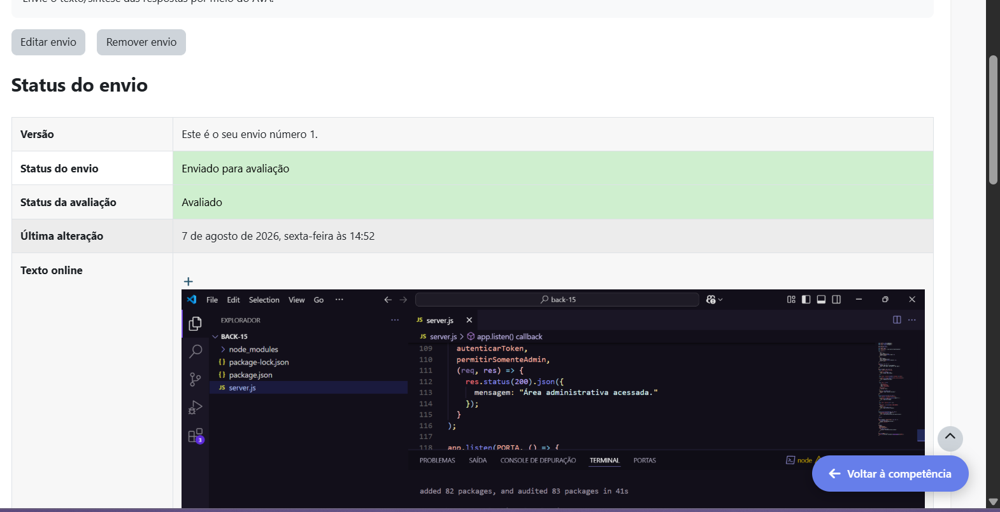
O que aprendi:Eu entendi que os servidores web são a base do funcionamento da internet, funcionando como intermediários que recebem os pedidos dos usuários e entregam os dados corretos (como arquivos ou formatos JSON). Aprendi que, para projetos pequenos ou tradicionais, o Apache é muito viável, mas para aplicações modernas que exigem lidar com muitos acessos ao mesmo tempo (como o aplicativo de entregas citado no exemplo de sala), o Nginx se destaca pelo desempenho.Além disso, entendi que colocar uma aplicação no ar sem segurança é perigoso. Por isso, é obrigatório abrir as portas certas no firewall (80 e 443) e configurar certificados SSL/HTTPS para criptografar as comunicações, impedindo que dados sensíveis e senhas de usuários sejam interceptados por invasores
Semana 16
Tema:Configuração e Segurança de APIs
Resumo:O conteúdo ensina a tornar APIs seguras, estáveis e preparadas para o mercado.
Primeiro, é apresentado o CORS, que controla quais sites podem acessar a API.
Depois, são abordados OAuth 2.0 e JWT, usados para autenticação e autorização
por meio de tokens com tempo de expiração, protegendo as senhas dos usuários.
Também são destacadas ferramentas como Prometheus, Grafana e Datadog para
monitorar o sistema, além da ELK Stack e Splunk para analisar logs, identificar
erros e detectar possíveis ataques, como DDoS.
Exemplo:
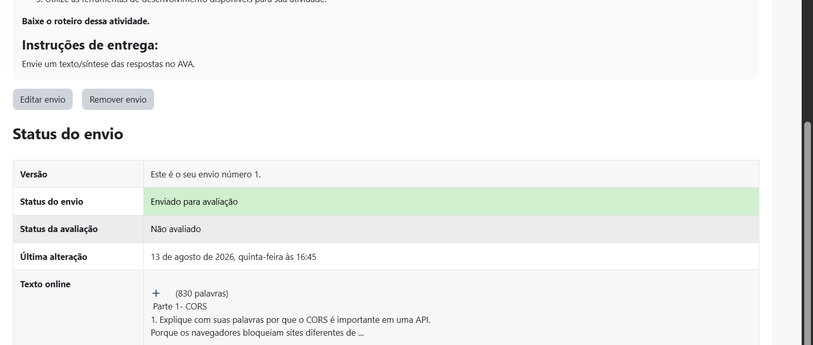
O que aprendi:Entendi que criar uma API não é apenas fazer as rotas funcionarem. É preciso
também proteger os dados, controlar quem pode acessar o sistema e garantir que ele continue funcionando.
Aprendi que o CORS ajuda a controlar quais sites podem acessar a API, enquanto
OAuth 2.0 e JWT ajudam na autenticação e autorização dos usuários sem precisar
expor suas senhas. Também entendi que ferramentas como Prometheus e Grafana permitem acompanhar o desempenho do servidor, e que sistemas como ELK Stack e Splunk ajudam a analisar os registros e identificar problemas ou possíveis ataques.
No geral, entendi que uma API pronta para produção precisa ser segura,
monitorada e preparada para lidar com muitos acessos.
Semana 17
Tema:Introdução aos Frameworks e Integração
Resumo:O conteúdo aborda a divisão de sistemas em microsserviços independentes e o uso de ferramentas de mensageria. O RabbitMQ organiza filas e prioridades, o Kafka
trabalha com grandes volumes de dados em tempo real e o Celery executa tarefas
demoradas em segundo plano.
Exemplo:
O que aprendi:Eu entendi que os frameworks back-end são ferramentas fundamentais que nos impedem de ter que reinventar a roda, permitindo criar aplicações escaláveis de forma muito mais rápida, seja com o modelo flexível do Express ou com a estrutura robusta do Django. Percebi também que conectar nosso sistema a serviços externos, como meios de pagamento ou mapas, fica muito mais simples quando usamos SDKs, pois eles reduzem a complexidade do código, desde que cuidemos bem das credenciais de autenticação e dos possíveis erros de conexão. Por fim, ficou claro para mim que manter o projeto organizado exige um controle rígido das bibliotecas externas, e que arquivos como o package.json ou requirements.txt funcionam como uma receita obrigatória para garantir que qualquer outro desenvolvedor consiga rodar a aplicação sem enfrentar problemas de versões incompatíveis.
Semana 18
Tema:Desenvolvimento de Microsserviços e Mensageria
Resumo:Aborda a divisão de sistemas grandes em microsserviços independentes e o uso de ferramentas de mensageria para gerenciar o tráfego de dados. Apresenta o RabbitMQ para organizar filas por prioridade (como transações VIP), o Apache Kafka para processar volumes massivos de dados em tempo real e o Celery para rodar tarefas demoradas em segundo plano.
Exemplo:
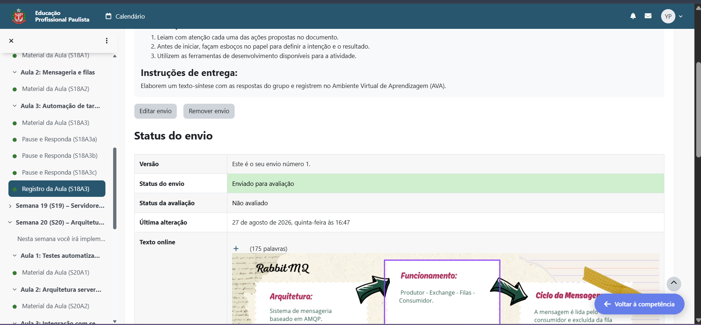
O que aprendi:Eu entendi que dividir um sistema gigante em microsserviços deixa a aplicação muito mais organizada e independente, mas cria o grande desafio de gerenciar a comunicação entre todas essas partes de forma estável. Percebi que usar sistemas de filas como RabbitMQ e Kafka é a melhor solução para evitar que o servidor caia em horários de pico, pois eles funcionam como uma sala de espera: o RabbitMQ ajuda muito a organizar pedidos por ordem de urgência (como dar prioridade para clientes VIP), enquanto o Kafka é perfeito quando precisamos lidar com uma quantidade gigantesca de transações por segundo e analisar dados ao mesmo tempo para evitar fraudes. Além disso, ficou claro para mim que processos demorados, como gerar relatórios ou enviar e-mails em massa, não devem travar a navegação do usuário; por isso, usamos ferramentas de automação como Celery e cron jobs para rodar essas tarefas silenciosamente em segundo plano e de forma programada.
Semana 19
Tema:Servidores Web Avançados
Resumo:Foca na automação de deploys, otimização de infraestrutura e proteção de dados. Ensina a criar pipelines de CI/CD (GitHub Actions ou Jenkins) para testar o código sozinho, a otimizar servidores Nginx usando cache e balanceamento de carga para aguentar picos de acessos, e a blindar bancos de dados usando criptografia e o princípio do menor privilégio.
Exemplo:
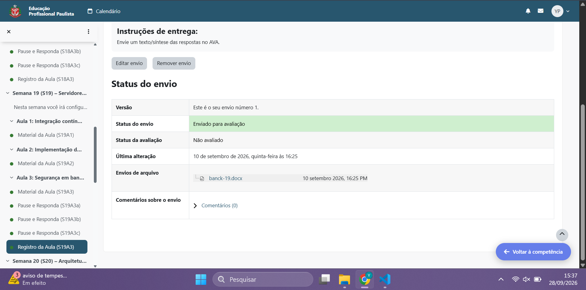
O que aprendi:Eu entendi que levar um sistema para o ar em um ambiente profissional exige processos automáticos e organizados, pois fazer tudo manualmente gera muitos erros e lentidão. Compreendi que usar pipelines de CI/CD com ferramentas como o GitHub Actions é indispensável para garantir a qualidade do código, já que o sistema testa tudo sozinho antes de atualizar o aplicativo oficial. Percebi também que para o servidor aguentar milhares de acessos ao mesmo tempo sem cair, precisamos configurar o Nginx para guardar dados em cache e dividir o peso dos acessos entre vários computadores usando o balanceamento de carga. Por fim, ficou claro para mim que a segurança do banco de dados é uma das partes mais valiosas do projeto, sendo obrigatório criptografar as tabelas para que os dados fiquem ilegíveis para invasores, além de dar a cada usuário do sistema apenas as permissões exatas que ele precisa para trabalhar, seguindo o princípio do menor privilégio.
Semana 20
Tema:Arquitetura Serverless e Pagamentos
Resumo:Os testes automatizados de segurança são essenciais para mapear vulnerabilidades de forma contínua e escalável, utilizando ferramentas fundamentais como o OWASP ZAP para escanear APIs gratuitas, o Burp Suite para interceptar requisições HTTP e simular ataques, o Nmap para analisar portas de redes abertas e o Snyk para auditar vulnerabilidades em bibliotecas de código aberto. Essas ferramentas ajudam a combater ameaças frequentes em sistemas de pagamento, como a injeção de SQL, onde comandos maliciosos tentam burlar o banco de dados, o controle de acesso deficiente que permite a visualização de relatórios não autorizados, e a exposição de dados sensíveis que exige o uso de criptografia robusta como o padrão AES-256. Todo esse ecossistema se integra às arquiteturas serverless com serviços como AWS Lambda e Azure Functions, que executam códigos sob demanda por eventos sem a necessidade de gerenciar servidores físicos, proporcionando escalabilidade automática e redução de custos operacionais, mas exigindo um monitoramento constante devido à grande quantidade de microsserviços e APIs externas envolvidos no processamento das transações.
Exemplo:
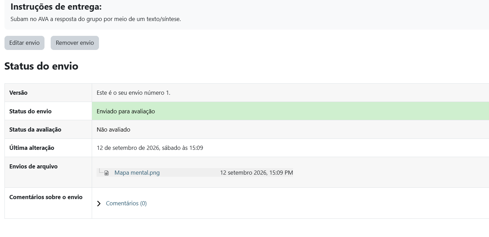
O que aprendi:A capacidade de identificar as principais falhas de segurança que afetam os sistemas de pagamento e as APIs no ambiente de desenvolvimento, descobrindo como antecipar riscos antes que o código chegue ao usuário final. Você também compreendeu o funcionamento de softwares específicos usados para automatizar a varredura de brechas em sistemas e aprendeu os fundamentos da arquitetura serverless, entendendo de que maneira a computação em nuvem automatiza a infraestrutura e impacta a segurança das aplicações modernas. Por fim, você assimilou a importância da aplicação de criptografia avançada e de boas práticas de controle de acesso para garantir que dados financeiros permaneçam confidenciais e protegidos contra vazamentos.
Semana 21
Tema:Gestão de Configurações e Monitoramento
Resumo:A gestão de configurações e segredos corporativos exige o isolamento completo de chaves de API, senhas e tokens por meio de cofres digitais centralizados, como o HashiCorp Vault e o Azure Key Vault, que controlam o acesso e impedem que informações críticas sejam expostas no código ou compartilhadas de forma insegura. Essa prática se conecta diretamente com a necessidade de separar os ambientes de desenvolvimento, validação e produção, garantindo que testes locais não utilizem ou modifiquem dados reais dos clientes. Para acompanhar o comportamento dessas aplicações de forma eficiente, entra em cena a arquitetura de logs distribuídos e monitoramento centralizado, que serve para registrar atividades, identificar gargalos e prever incidentes na infraestrutura através de métricas úteis e alertas bem calibrados. Quando esses sistemas crescem e passam a rodar no modelo de microsserviços, utiliza-se a orquestração para coordenar as tarefas e manter todas as partes integradas como uma unidade coesa. A principal ferramenta do mercado para essa função é o Kubernetes, uma plataforma de código aberto que gerencia contêineres e utiliza componentes específicos, como clusters, nodes e pods, para balancear o tráfego, redistribuir cargas de trabalho automaticamente em caso de falhas e escalar os recursos do sistema dinamicamente em momentos de grande volume de acessos.
Exemplo:
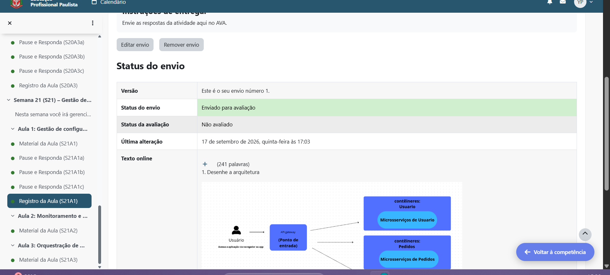
O que aprendi: a compreensão sobre a importância crítica de proteger dados sensíveis no desenvolvimento de software, aprendendo a gerenciar segredos e credenciais de bancos de dados fora do código-fonte por meio de ferramentas de armazenamento seguro e centralizado. Você também aprendeu a estruturar e segmentar as configurações de uma aplicação de acordo com o ambiente em que ela está rodando, seja em desenvolvimento, homologação ou produção, evitando falhas humanas e o vazamento de informações corporativas. Além disso, você adquiriu conhecimentos sobre a implementação de logs centralizados e monitoramento em tempo real, tornando-se capaz de rastrear falhas e criar alertas eficientes que garantem a saúde do sistema sem poluir a comunicação da equipe técnica. Por fim, você assimilou o conceito de orquestração de microsserviços, compreendendo como plataformas baseadas em contêineres automatizam a escalabilidade, gerenciam falhas de comunicação de maneira autônoma e mantêm grandes aplicações distribuídas funcionando com alta disponibilidade.
Font-end
Semana 15
Tema:Estilização e Performance de Páginas Web
Resumo: O CSS separa a estrutura do design visual. O CSS Grid, ativado por display grid, divide a página em linhas e colunas flexíveis usando a unidade fr, que distribui o espaço em frações. A propriedade grid-template-areas organiza o layout nomeando blocos como cabeçalho, menu e rodapé, enquanto as Media Queries alteram o número dessas colunas para adaptar a página a celulares, tablets e computadores.Para manter o código limpo e padronizado, utilizam-se ferramentas de desenvolvimento front-end. O Prettier corrige a formatação estética e o alinhamento do texto automaticamente. O ESLint analisa o script em tempo real para apontar erros de lógica e forçar boas práticas no JavaScript. O Babel funciona como um compilador que traduz o JavaScript moderno para versões mais antigas, garantindo o funcionamento do site em navegadores desatualizados.A otimização de performance garante que o site carregue rapidamente. A técnica de Lazy Loading adia o carregamento de imagens e mídias pesadas, baixando-as apenas quando surgem na tela do usuário. A Minificação diminui o peso dos arquivos de estilo ao remover espaços em branco, quebras de linha e comentários inúteis do código. Por fim, o Google Lighthouse faz a auditoria completa da página, gerando relatórios de velocidade e apontando melhorias técnicas.
Exemplo:
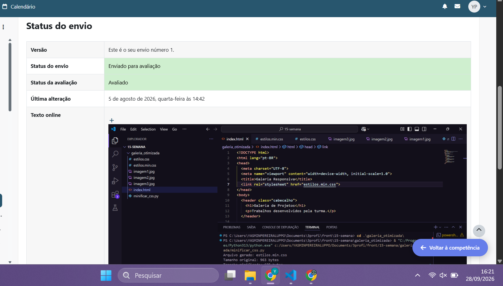
O que aprendi: A estruturar layouts flexíveis com CSS Grid: Você aprendeu a separar o design da estrutura usando arquivos CSS externos. Compreendeu como ativar o contêiner de grid, utilizar a unidade flexível fr para dividir colunas e mapear seções com grid-template-areas. Além disso, entendeu o papel das media queries para garantir que o layout seja responsivo em qualquer tamanho de tela (celular, tablet ou desktop).A padronizar e automatizar o código front-end: Você aprendeu a importância de ferramentas que melhoram a produtividade e a qualidade do desenvolvimento. Compreendeu que o Prettier automatiza a formatação estética, o ESLint analisa o JavaScript em tempo real para evitar bugs e aplicar boas práticas, e o Babel compila códigos modernos para versões antigas, garantindo que o site funcione em qualquer navegador.A otimizar a velocidade e performance das páginas: Você aprendeu técnicas para deixar o site mais leve. Viu que o Lazy Loading adia o carregamento de imagens pesadas até que fiquem visíveis para o usuário, que a Minificação reduz o tamanho dos arquivos eliminando espaços desnecessários e comentários, e que o Google Lighthouse é a ferramenta ideal para auditar e indicar melhorias de desempenho no site.
Semana 16
Tema:Animações e Pré-processadores CSS
Resumo:Animações com CSS, JavaScript e GSAPAs animações transformam interfaces estáticas em experiências interativas e intuitivas. Os efeitos mais simples e transições básicas devem ser feitos diretamente via CSS. Já o JavaScript e a biblioteca GSAP são utilizados quando há necessidade de controle avançado, sequenciamento complexo e interações dinâmicas dependentes das ações do usuário. O foco principal no desenvolvimento de animações é a otimização de desempenho, garantindo que os efeitos visuais não gerem travamentos no navegador. O SASS resolve as principais limitações do CSS puro em projetos grandes, que são a falta de variáveis nativas e de recursos robustos de modularização. Com ele, o código é organizado em arquivos separados por componentes e depois compilado. A utilização de variáveis e mixins permite definir cores, fontes e blocos de código reutilizáveis, o que possibilita alterações globais rápidas e garante a consistência do design. A sintaxe SCSS é a mais adotada por ser idêntica ao CSS tradicional, utilizando chaves {} e pontos e vírgulas ;.
Exemplo:
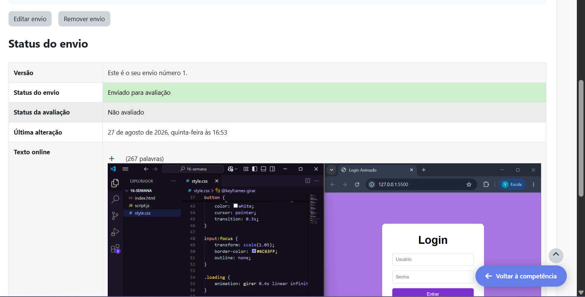
O que aprendi:A aplicar a técnica certa para cada tipo de animação: Você aprendeu a diferenciar quando usar CSS (para transições simples e leves) ou JavaScript/GSAP (para controle dinâmico de fluxos e interatividades complexas), sem prejudicar a performance da página. A otimizar a arquitetura de estilização com SASS: Você aprendeu a criar folhas de estilo modulares, limpas e fáceis de manter através de variáveis, funções e mixins, economizando tempo em atualizações visuais de larga escala.
Semana 17
Tema:Integração com APIs Externas
Resumo:Integração com APIs Externas (Aula 1)Esta aula aborda como conectar aplicações front-end a serviços externos para obter dados dinâmicos em tempo real. Usando como exemplo prático o consumo de dados climáticos da API OpenWeatherMap, foi destacado que esse tipo de requisição exige uma chave de API válida (API Key) para autenticação. No código JavaScript, métodos assíncronos como fetch() ou a biblioteca Axios são utilizados para fazer as chamadas HTTP, extrair dados em formato JSON e manipulá-los dinamicamente na interface, além da importância de tratar possíveis erros com funções dedicadas. WebSockets e Comunicação em Tempo Real (Aula 2)Focada em cenários que exigem atualizações instantâneas sem a necessidade de requisições repetidas (como um chat ou o status de um sistema de delivery), esta aula ensina a implementar o protocolo WebSockets. Você aprendeu a configurar um servidor WebSocket usando Node.js para estabelecer conexões bidirecionais. Com isso, torna-se possível enviar e receber mensagens de texto de maneira imediata entre o servidor e múltiplos clientes conectados, além de diagnosticar problemas comuns de formato no tráfego desses dados. GraphQL no Front-End (Aula 3)Diferente das APIs REST tradicionais, o GraphQL permite realizar consultas de dados de maneira muito mais eficiente e precisa, evitando o carregamento de informações desnecessárias. A aula ensina a configurar o Apollo Server, definindo esquemas (schemas) e criando resolvedores (resolvers) para buscar informações específicas (como clientes ou produtos). Além disso, mostra como utilizar o Playground do Apollo Server como ambiente de testes para rodar e validar essas consultas direcionadas.
Exemplo:
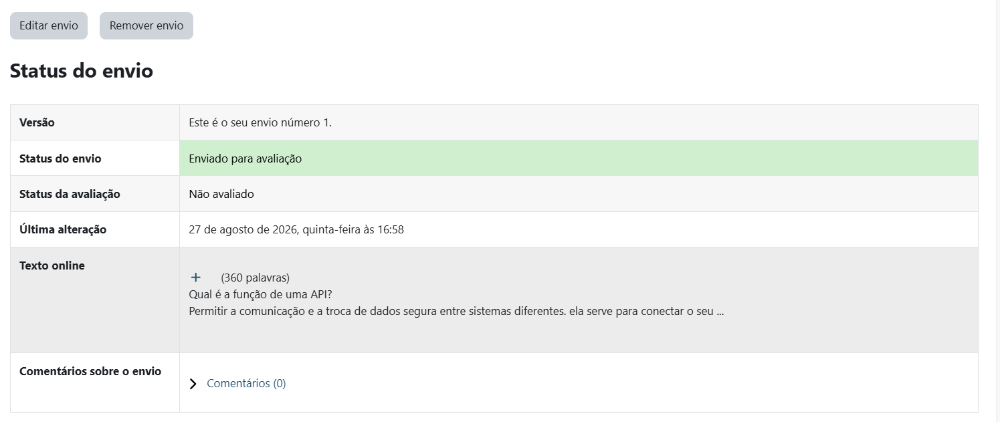
O que aprendi:A consumir dados dinâmicos com segurança: Você aprendeu a integrar APIs HTTP REST no front-end usando fetch ou Axios, compreendendo o papel das chaves de autenticação (API Keys) e a manipulação de estruturas JSON. A criar aplicações com atualização instantânea: Você aprendeu a diferença entre requisições comuns e conexões persistentes, sabendo como estruturar servidores em Node.js com WebSockets para tráfego de dados bidirecional em tempo real. A otimizar requisições com GraphQL: Você aprendeu a substituir consultas REST genéricas por requisições sob medida utilizando o ecossistema Apollo, desenhando schemas e resolvers para que o front-end peça apenas os dados exatos de que precisa.
Semana 18
Tema:CI/CD e Testes Automatizados
Resumo:Animações com CSS, JavaScript e GSAPAs animações transformam interfaces estáticas em experiências interativas e intuitivas. Os efeitos mais simples e transições básicas devem ser feitos diretamente via CSS. Já o JavaScript e a biblioteca GSAP são utilizados quando há necessidade de controle avançado, sequenciamento complexo e interações dinâmicas dependentes das ações do usuário. O foco principal no desenvolvimento de animações é a otimização de desempenho, garantindo que os efeitos visuais não gerem travamentos no navegador.Pré-processadores CSS (SASS)O SASS resolve as principais limitações do CSS puro em projetos grandes, que são a falta de variáveis nativas e de recursos robustos de modularização. Com ele, o código é organizado em arquivos separados por componentes e depois compilado. A utilização de variáveis e mixins permite definir cores, fontes e blocos de código reutilizáveis, o que possibilita alterações globais rápidas e garante a consistência do design. A sintaxe SCSS é a mais adotada por ser idêntica ao CSS tradicional, utilizando chaves {} e pontos e vírgulas ;.Ferramentas de Build e Automação (Webpack x Gulp)Projetos modernos geram tarefas repetitivas (compilar SASS, minificar códigos, compactar imagens) que, se feitas manualmente, consomem tempo e causam erros.Gulp: É um task runner (executor de tarefas). Ele automatiza processos específicos em sequência e usa recursos como o Live Reload para atualizar o navegador instantaneamente ao detectar mudanças no código.Webpack: É um module bundler (empacotador de módulos). Ele junta múltiplos arquivos e dependências em um único pacote final compacto para diminuir as requisições do navegador, sendo ideal para aplicações complexas construídas com frameworks.
Exemplo:
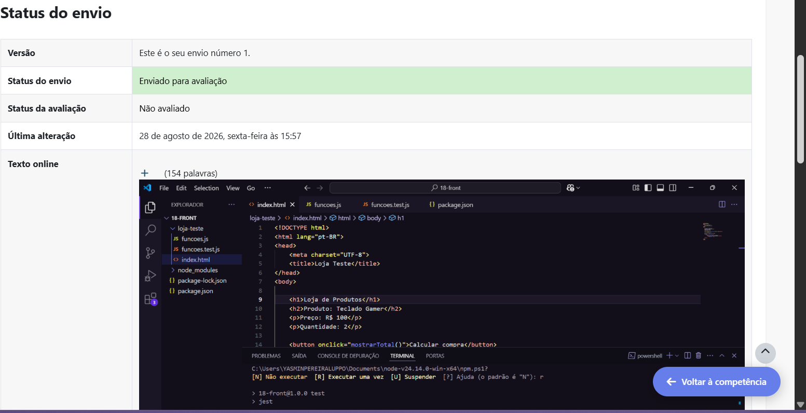
O que aprendi:A aplicar a técnica certa para cada tipo de animação: Você aprendeu a diferenciar quando usar CSS (para transições simples e leves) ou JavaScript/GSAP (para controle dinâmico de fluxos e interatividades complexas), sem prejudicar a performance da página. A otimizar a arquitetura de estilização com SASS: Você aprendeu a criar folhas de estilo modulares, limpas e fáceis de manter através de variáveis, funções e mixins, economizando tempo em atualizações visuais de larga escala. A automatizar o fluxo de trabalho front-end: Você aprendeu a configurar ferramentas para eliminar processos manuais. Compreendeu que o Gulp gerencia tarefas repetitivas e monitora arquivos em tempo real, enquanto o Webpack resolve o problema de performance empacotando dependências, minificando códigos e realizando divisão de código (code splitting) para produção.
Semana 19
Tema:Técnicas Avançadas de CSS e Mobile-First
Resumo:a aplicar recursos modernos de estilização para resolver limitações de layouts complexos e dinâmicos. O conteúdo foca no uso do CSS Grid, ativado pela propriedade display: grid, que permite dividir a página de forma estruturada e inteligente. É introduzida a regra grid-template-columns com unidades de fração flexível (como 1fr 2fr 1fr), capaz de criar estruturas onde as colunas laterais ocupam uma fração do espaço e a central recebe o dobro do tamanho. A aula também aborda o uso de media queries para ocultar ou exibir barras laterais dinamicamente de acordo com a resolução da tela, garantindo a organização visual dos elementos. a metodologia de projetar interfaces iniciando obrigatoriamente pelos dispositivos móveis (telas menores) e expandindo a complexidade de maneira progressiva para computadores e monitores maiores. As media queries atuam como o mecanismo técnico para interceptar a largura da tela e injetar os ajustes de CSS necessários. Essa abordagem garante que os sites fiquem otimizados, limpos e acessíveis, evitando que o navegador do celular precise processar designs excessivamente pesados criados originalmente para computadores. a biblioteca Redux para gerenciar de forma centralizada e previsível o fluxo de dados em aplicações front-end complexas (como um ecossistema de e-commerce).
Exemplo:
O que aprendi:A desenhar grids proporcionais sofisticados: Você aprendeu a aplicar display: grid [89] e dominar a regra grid-template-columns [91] para controlar a largura proporcional exata de colunas em interfaces corporativas modernas.A inverter o fluxo de design para Mobile-First: Você aprendeu a planejar e codificar estilos pensando primeiro na usabilidade e restrições de celulares, escalando o layout com media queries apenas quando houver espaço físico disponível na tela.A centralizar dados globais com Redux: Você aprendeu como contornar o problema de gerenciar estados espalhados pelos componentes React, dominando a arquitetura de actions, reducers e disparos via dispatch para construir aplicações escaláveis e fáceis de debugar.
Semana 20
Tema:Acessibilidade e Animações Interativas
Resumo:o conceito de WAI-ARIA (Accessible Rich Internet Applications), um conjunto de atributos estruturais adicionados ao HTML para ajudar tecnologias assistivas (como leitores de tela) a interpretar elementos complexos. O uso do ARIA deve complementar o HTML semântico. aria-label: Adiciona uma descrição em texto para botões ou elementos que possuem apenas ícones visíveis.aria-labelledby: Aponta para o id de outro elemento textual existente, reutilizando o rótulo e evitando redundâncias.aria-hidden="true": Oculta elementos puramente decorativos ou redundantes dos leitores de tela.aria-live: Monitora regiões dinâmicas (notificações de sucesso ou alertas de erro). O valor "polite" avisa o usuário sem interrompê-lo, enquanto o "assertive" interrompe o leitor imediatamente.aria-expanded: Indica de forma booleana (true ou false) se um menu expansível ou dropdown está aberto ou fechado. validação técnica de conformidade para garantir que a interface seja inclusiva. Ensina a realizar auditorias automatizadas e estruturar relatórios utilizando ferramentas essenciais de diagnóstico:WAVE: Extensão utilizada para mapear falhas de acessibilidade e verificar problemas críticos de contraste insuficiente em textos.Lighthouse e AXE DevTools: Ferramentas integradas para escanear a página, identificar barreiras de navegação por teclado e gerar notas de conformidade com soluções práticas de correção.
Exemplo:
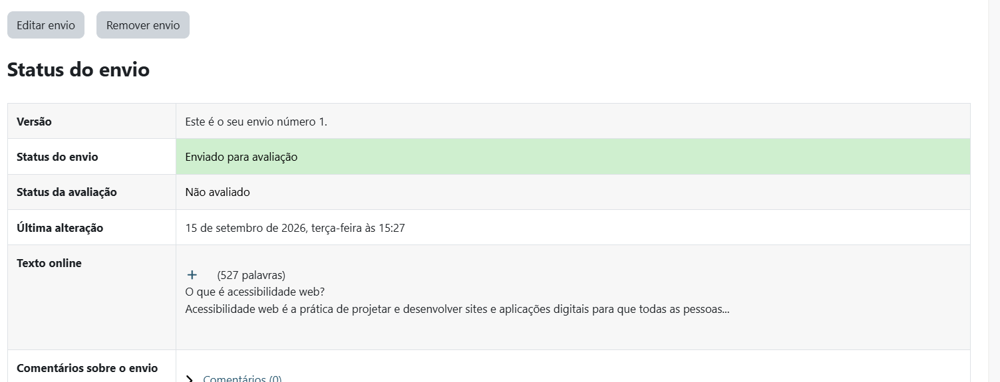
O que aprendi:A enriquecer o HTML com semântica acessível: Você aprendeu a usar atributos ARIA de forma cirúrgica para que leitores de tela interpretem botões de ícones, alertas dinâmicos e menus expansíveis.A escolher o motor ideal de animação: Você aprendeu a balancear o uso de CSS nativo (para transições leves) com JavaScript e GSAP (para fluxos de animação complexos e sequenciais).A auditar e corrigir interfaces digitais: Você aprendeu a usar ferramentas do ecossistema de desenvolvimento (WAVE, Lighthouse e AXE) para escanear barreiras visuais e motoras, transformando erros de contraste e foco em soluções inclusivas.
Semana 21
Tema: Serviços de Autenticação e Monitoramento
Resumo:como implementar fluxos de login seguros no ecossistema front-end utilizando protocolos modernos. O foco prático é a integração com o Google OAuth, uma solução que simplifica o acesso ao permitir que usuários utilizem credenciais existentes do Google de forma totalmente segura. Para habilitar essa funcionalidade, o desenvolvedor deve configurar previamente um identificador de cliente (client_id) e definir as URIs de redirecionamento autorizadas no console do provedor. No ambiente React, utiliza-se a biblioteca jwt-decode para decodificar e processar os tokens JWT de acesso gerados, extraindo com segurança as informações públicas de perfil do usuário. saúde e na estabilidade das aplicações web em produção, esta aula ensina como rastrear bugs no lado do cliente. Você aprendeu a implementar ferramentas como o Sentry para capturar e centralizar erros de lógica e falhas de requisição em tempo real. O Sentry coleta relatórios detalhados contendo o rastro da falha (stack trace), o navegador utilizado e as condições do sistema do usuário. Além disso, a ferramenta permite configurar alertas automáticos e canais de notificação para avisar a equipe técnica assim que um erro crítico acontece, permitindo correções ágeis antes que o problema afete mais usuários.
Exemplo:
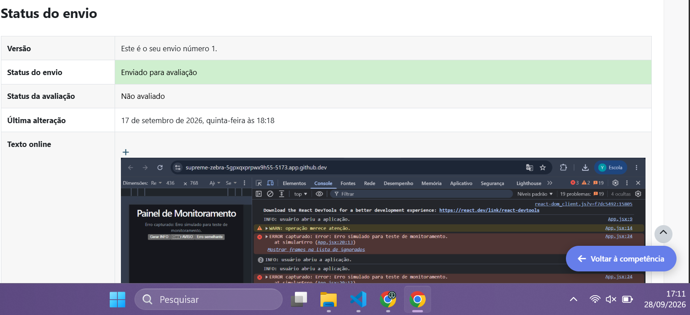
O que aprendi:A externalizar o controle de acessos com OAuth: Você aprendeu como proteger sua aplicação React integrando serviços de autenticação externa (Google OAuth), configurando chaves de cliente e decodificando tokens JWT.A monitorar exceções em tempo real com o Sentry: Você aprendeu a configurar fluxos automatizados de coleta de logs no front-end para descobrir bugs imediatamente, em vez de depender que o usuário relate o erro.A projetar aplicações web com experiência de app nativo: Você aprendeu a estruturar um PWA do zero configurando metadados via manifest.json, preparando rotinas offline com Service Workers e auditando a conformidade técnica da aplicação via Lighthouse.
Versionamento
Semana 15
Tema:Git Básico – repositório, commit e histórico
Resumo:os conceitos do Git como um sistema de controle de versão distribuído, onde cada computador possui uma cópia completa com todo o histórico do projeto. Diferente de sistemas tradicionais que salvam apenas diferenças de código, o Git trabalha com snapshots (instantâneos), registrando o estado de todos os arquivos naquele exato momento. auditoria de código e recuperação de falhas, esta aula mostra o Git como uma rede de segurança para o projeto. O comando git log é utilizado para inspecionar toda a linha do tempo, exibindo o autor, a data e o código identificador único (hash) de cada modificação salva. Caso uma função crítica seja apagada por engano no código atual, o desenvolvedor pode usar o comando git checkout hash -- nome_do_arquivo (ou git restore) para resgatar e trazer de volta apenas aquele arquivo específico de um ponto seguro do passado diretamente para o diretório de trabalho atual. aborda como manter um repositório profissional limpo, leve e seguro. O arquivo .gitignore é uma folha de configuração onde o desenvolvedor lista explicitamente quais arquivos e pastas o Git deve ignorar por completo. Devem ser incluídos no .gitignore itens como a pasta node_modules (para manter o projeto leve) e arquivos de credenciais ou senhas como o .env (para evitar falhas críticas de segurança). Além disso, a aula destaca a importância de commits atômicos e mensagens descritivas padronizadas (como o padrão Conventional Commits) para contar uma história clara do código e facilitar o trabalho em equipe.
Exemplo:
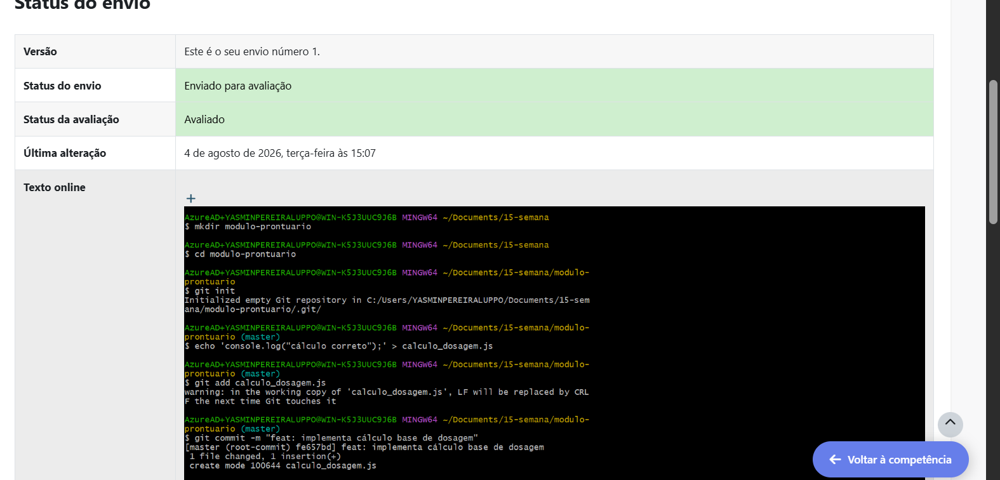
O que aprendi:A dominar o fluxo básico do Git: Você aprendeu a configurar sua identidade (git config), inicializar repositórios locais (git init), preparar arquivos (git add) e consolidar versões no histórico (git commit).A auditar e recuperar códigos do passado: Você aprendeu a ler a linha do tempo do seu projeto com git log e extrair arquivos específicos de commits passados usando chaves de hash, aplicando técnicas de rollback contra perda de dados.A proteger e otimizar repositórios com .gitignore: Você aprendeu a blindar dados sensíveis de credenciais e dependências pesadas de terceiros blindando seu projeto com o arquivo .gitignore, além de escrever mensagens de histórico profissionais.
Semana 16
Tema:Branching e estratégias de fluxo (Git Flow, Trunk Based)
Resumo:O Git é apresentado como um sistema de controle de versão distribuído, no qual cada computador possui uma cópia local completa com todo o histórico do projeto. Diferente de sistemas antigos que salvam apenas as diferenças, o Git trabalha tirando snapshots (instantâneos) da situação dos arquivos em um dado momento. Antes de salvar qualquer alteração, o desenvolvedor deve configurar sua identidade global no terminal com seu nome e e-mail. O ciclo de vida dos arquivos passa por três áreas essenciais: o Working Directory (diretório local de edição), a Staging Area (área intermediária ativada pelo comando git add onde se escolhe o que vai na "foto") e o Repository (pasta .git onde o comando git commit consolida a versão permanentemente). utilização do Git como uma rede de segurança contra perda de dados ou deleções acidentais. O comando git log permite navegar pela linha do tempo do projeto para auditar quem fez cada alteração, em qual data e sob qual código único identificador (hash). Caso uma função importante seja apagada ou corrompida por engano no estado atual do código, o desenvolvedor consegue resgatar seletivamente aquele arquivo do passado diretamente para a sua pasta de trabalho usando o comando git checkout hash -- nome_do_arquivo (ou o comando git restore), estabelecendo checkpoints seguros no fluxo de desenvolvimento.
Exemplo:
O que aprendi:A operar o fluxo local do Git: Você aprendeu os comandos fundamentais para configurar sua identidade (git config), iniciar um repositório (git init), inspecionar modificações (git status), preparar arquivos (git add) e gravar versões definitivas (git commit).A fazer auditoria e recuperação de código (Rollback): Você aprendeu a interpretar o histórico do projeto via git log e usar o identificador hash para extrair e restaurar arquivos específicos de uma versão anterior saudável sem perder as demais alterações atuais.A gerenciar repositórios limpos e seguros: Você aprendeu a blindar sua aplicação contra vazamento de credenciais e excesso de arquivos temporários configurando o .gitignore, além de entender como padronizar mensagens de commit para o trabalho colaborativo.
Semana 17
Tema:Colaboração remota – Pull Request, Code Review
Resumo:O controle de versão distribuído organiza o desenvolvimento de software registrando o estado do código através de snapshots gerenciados em três áreas: diretório de trabalho, área de preparação e repositório.A linha do tempo do projeto funciona como uma rede de segurança para recuperar arquivos corrompidos, exigindo mensagens claras e o uso do arquivo .gitignore para proteger senhas e remover arquivos pesados desnecessários.A colaboração remota ocorre de forma segura através dos fluxos de fork, push e pull request, permitindo que a equipe realize a revisão de código de forma construtiva e resolva conflitos de merge de maneira totalmente documentada.
Exemplo:
O que aprendi:A operar o fluxo local do Git: Você aprendeu os comandos fundamentais para configurar sua identidade (git config), iniciar um repositório (git init), inspecionar modificações (git status), preparar arquivos (git add) e gravar versões definitivas (git commit).A fazer auditoria e recuperação de código (Rollback): Você aprendeu a interpretar o histórico do projeto via git log e usar o identificador hash para extrair e restaurar arquivos específicos de uma versão anterior saudável sem perder as demais alterações atuais.A gerenciar repositórios limpos e seguros: Você aprendeu a blindar sua aplicação contra vazamento de credenciais e excesso de arquivos temporários configurando o .gitignore, além de entender como padronizar mensagens de commit para o trabalho colaborativo.
Semana 18
Tema: Tagging, releases e versionamento semântico
Resumo:Marcação de Versões com Git TagO desenvolvimento de software exige o registro de pontos estáveis chamados releases. Para isso, utiliza-se a git tag, que funciona como um marcador fixo (etiqueta) apontando para um commit específico no histórico. Diferente de uma branch (que continua evoluindo com novos commits), a tag permanece estática, sendo ideal para organizar entregas e garantir um rollback confiável caso um erro surja em produção. Existem dois tipos principais de tags:Lightweight tag: Funciona como um ponteiro simples ou atalho, sem armazenar metadados (autor ou data), ideal para testes internos rápidos.Annotated tag: É um objeto completo no Git que armazena autor, data, e-mail e uma mensagem descritiva, sendo o modelo altamente recomendado para releases oficiais.(Nota técnica): As tags criadas localmente só ficam visíveis para a equipe após serem enviadas ao repositório remoto via comandos como git push origin --tags.
MAJOR (X.0.0): Alterado quando o código sofre modificações profundas que quebram a compatibilidade da API.MINOR (0.Y.0): Alterado quando novas funcionalidades são adicionadas, mantendo a compatibilidade com as versões anteriores.PATCH (0.0.Z): Alterado exclusivamente para correções de bugs (bug fixes) que não afetam o funcionamento existente.
Exemplo:
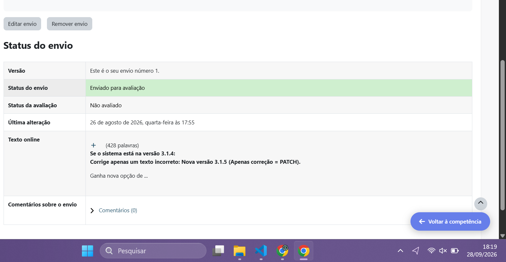
O que aprendi:A fixar e resgatar versões estáveis: Você aprendeu a criar tags do tipo lightweight e annotated para marcar entregas oficiais no histórico do Git e utilizá-las para restaurar estados seguros do software em cenários de falha.A gerenciar a compatibilidade via SemVer: Você aprendeu a classificar e atualizar os números de versão (MAJOR, MINOR e PATCH) de acordo com o impacto que as mudanças de código trazem para o usuário final ou sistemas integrados.A automatizar históricos de entrega com Changelogs: Você aprendeu os fundamentos para construir relatórios de mudanças bem categorizados a partir de mensagens de commits profissionais padronizadas (Conventional Commits).
Semana 19
Tema:Fundamentos de mensageria – conceitos de fila, tópico e garantias
Resumo:A arquitetura de software moderna adota a integração assíncrona, um modelo no qual os sistemas trocam dados e se comunicam sem a necessidade de uma resposta imediata. Essa abordagem elimina os gargalos da comunicação síncrona tradicional (onde um serviço trava esperando o outro responder), trazendo três benefícios fundamentais:Escalabilidade,Resiliência e Desacoplamento temporal
O fluxo de comunicação baseado em eventos depende de três papéis bem definidos que atuam em conjunto:Produtor (Producer): A origem do evento. Ele publica o fato ocorrido (ex: PedidoCriado) na rede e segue sua execução, sem precisar saber quem irá consumi-lo.Corretor (Broker): O intermediário ou "cérebro" da integração. É o responsável por receber, armazenar temporariamente e distribuir as mensagens para os destinos corretos.Consumidor (Consumer): O sistema ou microsserviço que reage ao evento disparado, executando sua própria lógica de negócio de forma isolada (ex: o serviço de estoque ou o serviço de envio de e-mails).
A escolha do Broker ideal depende estritamente dos requisitos técnicos e dos trade-offs de cada cenário de negócio:RabbitMQ: Destaca-se pelo seu sistema de roteamento complexo e flexível por meio de regras e filas, sendo ideal para a mensageria tradicional e fluxos empresariais intrincados.Amazon SQS: Uma fila totalmente gerenciada na nuvem AWS, focada em baixa complexidade operacional e ideal para cenários mais simples e integrados ao ecossistema da Amazon.Apache Kafka: Focado no alto volume de dados, armazenamento massivo e streaming de eventos. É a ferramenta mais adequada para cenários que exigem reprocessamento histórico e análise massiva de fluxos de dados (streaming).
Exemplo:
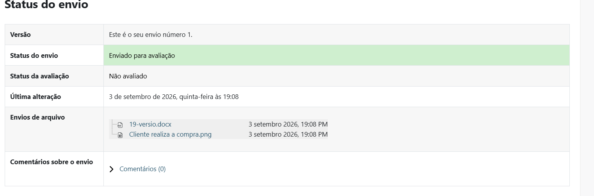
O que aprendi:A diferenciar modelos de integração de sistemas: Você compreendeu a diferença prática entre chamadas diretas (síncronas) e a troca de dados desacoplada (assíncrona), identificando como evitar travamentos em plataformas de alta demanda.A mapear a arquitetura baseada em eventos: Você aprendeu a estruturar e modelar um domínio identificando quem são os Produtores, os Consumidores e como o Broker gerencia o tráfego dos fatos de negócio.A avaliar ferramentas por caso de uso: Você aprendeu a analisar os prós e contras das principais tecnologias do mercado (RabbitMQ, SQS e Kafka), sabendo justificar qual delas resolve melhor problemas de roteamento, streaming ou infraestrutura em nuvem.
Semana 20
Tema:RabbitMQ – conceitos e operação básica
Resumo:Exchanges, Filas e Estratégias de RoteamentoNo RabbitMQ, as mensagens publicadas pelo produtor nunca vão direto para uma fila. Elas passam obrigatoriamente por uma Exchange (Central de Distribuição), que analisa as regras e decide o destino correto. A conexão e os critérios que ligam uma Exchange a uma fila são chamados de Bindings, criados com base em chaves identificadoras chamadas Routing Keys e Binding Keys. O comportamento de distribuição é definido pelo tipo de Exchange selecionado:Direct Exchange: Roteia a mensagem exclusivamente para as filas cuja chave de ligação seja uma combinação exata da chave de roteamento.Fanout Exchange: Ignora qualquer chave e copia a mensagem para todas as filas que estiverem conectadas a ela ao mesmo tempo.Topic Exchange: Permite um roteamento flexível e dinâmico utilizando padrões de texto com caracteres curinga como * (substitui uma palavra) e # (substitui zero ou mais palavras).Confiabilidade de Entrega e Redrive PolicyPara garantir que nenhuma informação seja perdida caso ocorram falhas de hardware ou software no meio do processamento, o RabbitMQ adota mecanismos de confirmação:ACK (Acknowledgment): Sinal enviado pelo consumidor avisando que a mensagem foi processada com sucesso, permitindo que a fila a apague com segurança.NACK (Negative Acknowledgment): Sinal enviado pelo consumidor informando que o processamento falhou, instruindo a fila a reencaminhar a mensagem.Redrive Policy e DLQ (Dead-Letter Queue): Para evitar que uma mensagem com erro crítico trave o sistema em um ciclo infinito de falhas e reprocessamento (infinite loop), aplica-se uma política de descarte. Após atingir um limite máximo de tentativas malsucedidas, a mensagem problemática é isolada e enviada para uma Fila de Mensagens Mortas (Dead-Letter Queue) para análise posterior da equipe de engenharia.Observabilidade e Gerenciamento (Management UI)O monitoramento da integridade da arquitetura de mensageria é realizado através da interface gráfica Management UI. A análise técnica das taxas de entrada (mensagens publicadas) e de saída (mensagens processadas) permite identificar falhas e gargalos na infraestrutura. Se o volume de uma fila cresce constantemente e o volume de mensagens não confirmadas aumenta, fica diagnosticado que o consumidor está sobrecarregado. Para equilibrar essa distribuição de carga de forma eficiente, ajusta-se a propriedade de Pré-fetch (Prefetch Count), definindo o limite máximo de mensagens que o RabbitMQ enviará a um consumidor por vez antes de exigir uma confirmação (ACK).
Exemplo:
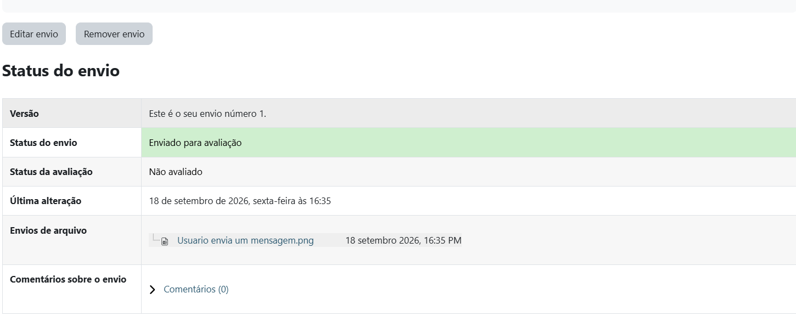
O que aprendi:A desenhar topologias de roteamento no RabbitMQ: Você aprendeu a modelar fluxos de dados conectando produtores e consumidores via Exchanges (Direct, Fanout, Topic), sabendo criar Bindings precisos para entregar dados aos locais corretos.A blindar sistemas contra perda de dados e travamentos: Você aprendeu a gerenciar o ciclo de confirmações da aplicação (ACK/NACK) e configurar políticas de Dead-Letter Queue para isolar dados defeituosos de forma resiliente.A gerenciar a performance e identificar gargalos: Você aprendeu a ler métricas de tráfego na interface administrativa e a configurar o Pré-fetch para evitar o esgotamento ou a ociosidade dos seus microsserviços.
Mobile
Semana 15
Tema:Componentes Avançados de Interface
Resumo:Criação de Componentes Personalizados e ReutilizáveisNo desenvolvimento mobile moderno, os componentes de interface encapsulam pedaços de lógica e layout para formar blocos reutilizáveis (desde simples botões até carrosséis e cards complexos). Para projetar interfaces profissionais e escaláveis com prazos apertados, adota-se três princípios essenciais de design:Encapsulamento: Isola a lógica interna do componente, tornando-o independente do contexto.Modularidade: Garante que o componente realize uma função específica sem dependências externas excessivas. Dividir um componente complexo em partes menores (subcomponentes) facilita os testes e a futura manutenção.Reusabilidade e Parametrização: O componente deve ser modular e parametrizável, utilizando parâmetros e propriedades (como títulos e preços) para configurar dados e comportamentos em diferentes telas sem alterar seu código-base.Abstração de Estilos: O uso de temas globais (como cores e fontes) permite que os componentes se adaptem automaticamente a diferentes identidades visuais e a variações como o modo claro ou escuro. Frameworks modernos como SwiftUI (iOS) e Jetpack Compose (Android) suportam nativamente essas práticas utilizando funções modificadoras e estados.Implementação de Animações AvançadasAs animações desempenham um papel fundamental na criação de experiências de usuário dinâmicas, fluidas e envolventes. O conteúdo destaca duas técnicas fundamentais para o ecossistema móvel:Animações baseadas na física: Criam comportamentos de movimento realistas que mimetizam o mundo real, aumentando o conforto visual do usuário.Transições personalizadas: Melhoram drasticamente a fluidez da navegação entre diferentes telas da aplicação.(Alerta de Usabilidade): O uso excessivo de animações deve ser evitado, pois impacta negativamente o desempenho (performance) do dispositivo e prejudica a usabilidade geral da aplicação.Gerenciamento de Estados ComplexosÀ medida que a interface ganha novos componentes e interatividades, gerenciar os dados dinâmicos locais exige soluções robustas para evitar inconsistências visuais. O aprendizado foca na necessidade de adotar um gerenciamento de estado centralizado. Esse mecanismo garante a sincronização e consistência dos dados compartilhados entre múltiplos componentes independentes. Para simplificar esse fluxo em arquiteturas de grande escala, torna-se indispensável o uso de bibliotecas dedicadas de gerenciamento de estado.
Exemplo:
O que aprendi:A construir interfaces modulares e parametrizáveis: Você aprendeu a criar componentes isolados e configuráveis por propriedades, aplicando a composição de subcomponentes e temas globais para garantir consistência visual no modo claro ou escuro.A aplicar movimentos fluidos com responsabilidade: Você aprendeu a enriquecer o aplicativo utilizando animações físicas e transições customizadas de tela, balanceando a interatividade para não degradar a performance e usabilidade do sistema.A arquitetar o fluxo de dados com estados centralizados: Você compreendeu como gerenciar e sincronizar estados complexos em aplicações móveis, eliminando bugs de dados desalinhados entre componentes por meio de padrões de sincronização centralizada.
Semana 16
Tema:Acessibilidade e Usabilidade
Resumo:Princípios de Acessibilidade e Atributos de InterfaceA acessibilidade em interfaces móveis garante que o aplicativo seja inclusivo e utilizável por pessoas com deficiências. Para isso, as diretrizes de desenvolvimento determinam a correta rotulação e estruturação de dados:Atributos ARIA e Descrições (Alt): São fundamentais para que tecnologias assistivas, como leitores de tela, interpretem os elementos visuais de maneira textual e lógica. Garantir que botões, imagens e links possuam textos alternativos e descritivos impede que elementos importantes fiquem invisíveis para usuários com deficiência visual.Navegação por Voz e Teclado: A etiquetagem precisa de elementos viabiliza comandos acessíveis e garante que o fluxo seja percorrido por voz ou teclado de forma consistente.Contraste de Cores: Os textos e fundos devem possuir um contraste mínimo suficiente para manter a legibilidade, o que pode ser verificado em ferramentas como o Contrast Checker.Planejamento e Métricas de Testes de UsabilidadeO planejamento técnico de testes é o primeiro passo essencial para identificar barreiras antes do lançamento de um produto. O processo estruturado divide-se em metas específicas:Identificação do Público-Alvo: O escopo do teste deve, obrigatoriamente, incluir um grupo diversificado de usuários, contemplando deficiências visuais, auditivas, motoras e cognitivas.Métricas de Acessibilidade: Focadas na conformidade com as diretrizes globais da WCAG (Web Content Accessibility Guidelines) e no volume de erros críticos ou médios mapeados.Métricas de Usabilidade: Avaliam a fluidez do uso prático medindo o tempo para completar tarefas, o número de cliques necessários, a taxa de erros gerados pelo usuário e o nível geral de satisfação.Execução de Testes e Ferramentas OperacionaisPara garantir uma cobertura completa de cenários, a engenharia de software adota abordagens automatizadas e qualitativas:Leitores de Tela Nativos: Utilização de ferramentas embarcadas como o VoiceOver (iOS) e o TalkBack (Android) para simular a navegação às cegas.Análise Comportamental: Softwares como Hotjar e UserTesting auxiliam na coleta de interações em tempo real. O uso de mapas de calor (heatmaps) indica visualmente onde as pessoas clicam ou encontram dificuldades de foco.Relatório e Triagem: Todos os problemas mapeados são consolidados em um relatório técnico, categorizados por severidade (crítico, médio, baixo) com soluções prescritas — como a inclusão de feedback tátil — para orientar os ajustes da equipe de design.
Exemplo:
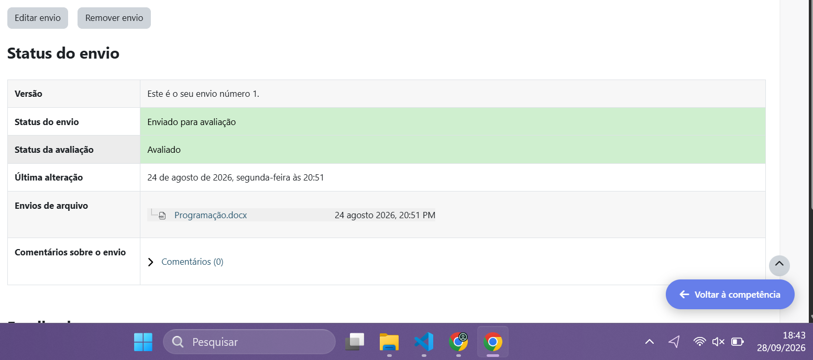
O que aprendi:A aplicar semântica inclusiva na interface: Você aprendeu a embutir atributos descritivos e correções de contraste no código para blindar o aplicativo contra barreiras visuais e auditivas, alinhando a aplicação às normas WCAG.A estruturar um plano de testes de UX: Você aprendeu a coordenar auditorias elegendo o público-alvo correto e mapeando indicadores de desempenho práticos, como tempo de tarefa e taxas de conformidade.A operar ferramentas profissionais de diagnóstico: Você aprendeu a manusear softwares de leitura de tela (VoiceOver / TalkBack) e análises comportamentais automatizadas para gerar relatórios detalhados de severidade de falhas antes da publicação final.
Semana 17
Tema:Banco de Dados Avançados
Resumo:Bancos de Dados Relacionais vs. NoSQLA escolha do modelo ideal de banco de dados depende diretamente dos requisitos de consistência e volume do sistema:Bancos Relacionais: Destacam-se por possuir relações bem definidas entre tabelas. Eles garantem alta consistência transacional e integridade dos dados por meio do cumprimento das propriedades ACID.Bancos NoSQL: Fornecem alta escalabilidade horizontal e flexibilidade, facilitando o processamento de grandes volumes de dados heterogêneos (como documentos JSON).Ecosistema Firebase e Operações CRUDO Firebase é uma plataforma amplamente adotada no desenvolvimento móvel devido à facilidade de persistência dinâmica. O aprendizado abrangeu o gerenciamento de dados estruturados em operações CRUD (Criação, Leitura, Atualização e Exclusão), distinguindo suas duas principais soluções:Cloud Firestore: Armazenamento escalável baseado em coleções e documentos estruturados.Realtime Database: Banco NoSQL que oferece sincronização em tempo real entre dispositivos.(Nota de Segurança): A proteção de dados trafegados entre o cliente e o banco deve ser assegurada obrigatoriamente por protocolos de criptografia em trânsito, como o TLS/SSL.Técnicas de Sincronização e Resolução de Conflitos Off-lineAplicativos móveis profissionais precisam manter suas funcionalidades operando mesmo sem conexão ativa à internet. Para isso, os dados são primeiramente salvos em armazenamentos locais (como SQLite, Room ou Realm) e sincronizados por meio de diferentes estratégias quando a conectividade é restabelecida:Filas de Operações (Operation Queues): Registram cada ação sequencialmente, garantindo a ordem dos processos e prevenindo duplicidades. O uso de identificadores unificados, como o UUID (Identificador Universal Único), impede que registros repetidos sejam criados no servidor.Sincronização Diferencial (Delta Sync): Transfere apenas as modificações feitas nos dados, otimizando a largura de banda e acelerando o processo.Sincronização Bidirecional: Permite alterações simultâneas no cliente e no servidor. No entanto, esse modelo é altamente suscetível a conflitos de dados (como escritas simultâneas ou conflitos de exclusão). Para reconciliá-los, aplicam-se regras automáticas como o Last-Write-Wins (última edição prevalece via timestamp), fusão automática de alterações (merge changes), versões paralelas ou solicitações de resolução manual pelo usuário.
Exemplo:
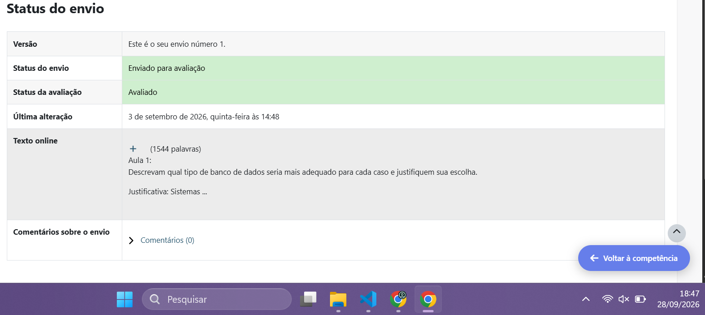
O que aprendi:A arquitetar dados conforme o cenário técnico: Você aprendeu a contrapor os benefícios de consistência estrutural dos bancos relacionais com o poder de escalabilidade horizontal e flexibilidade de esquemas do ecossistema NoSQL.A gerenciar o Firebase com foco em tempo real: Você aprendeu as diferenças operacionais entre o Firestore e o Realtime Database, compreendendo o ciclo de requisições CRUD e os padrões TLS/SSL para blindagem de pacotes na rede.A implementar resiliência off-line e tratar conflitos: Você aprendeu a arquitetar filas de sincronização diferencial e bidirecional, dominando o uso de UUIDs para mitigar dados duplicados e aplicando estratégias (Last-Write-Wins, fusões lógicas) para sanar conflitos de merge de dados.
Semana 18
Tema:Integração com Serviços de Terceiros
Resumo:Integração com APIs ExternasA conexão com serviços externos enriquece as aplicações móveis ao trazer dados dinâmicos em tempo real. A implementação técnica fundamenta-se no uso de rotinas de autenticação protegidas e na execução de métodos HTTP. Durante esse processo, a engenharia de software exige o desenho de estratégias rígidas para o tratamento de erros, prevenindo que falhas de rede ou indisponibilidades de terceiros causem interrupções ou travamentos no uso do aplicativo. Além disso, o formato de resposta dessas APIs (como o JSON) influencia diretamente a estrutura e o design de exibição dos dados na interface.Utilização de Backend as a Service (BaaS)Os serviços de BaaS (Backend como Serviço) funcionam como aceleradores de desenvolvimento no ecossistema mobile, permitindo que a equipe configure recursos complexos de infraestrutura sem a necessidade de construir um servidor do zero. O Firebase destaca-se como uma das principais soluções de BaaS do mercado, simplificando a implementação de fluxos de autenticação de usuários e o disparo de notificações push para engajamento. Contudo, a adoção de plataformas BaaS introduz riscos associados à dependência de provedores externos (vendor lock-in), gargalos de custos e vulnerabilidades de segurança, exigindo estratégias de mitigação (como regras de segurança granulares e arquiteturas desacopladas).Integração com Serviços de MensageriaFocada na comunicação assíncrona e em tempo real entre diferentes dispositivos e sistemas, esta competência aborda o tráfego controlado de informações. O ponto central é a importância do gerenciamento de filas, mecanismo técnico que assegura a resiliência do sistema e garante a entrega das mensagens mesmo em cenários de alta demanda ou instabilidade de rede. O ecossistema permite ainda categorizar as mensagens trafegadas, filtrando e direcionando os dados de forma precisa para aumentar a relevância do conteúdo que chega até o usuário final.
Exemplo:
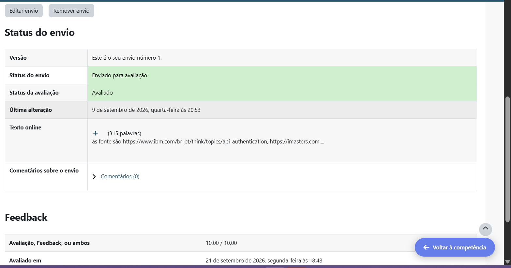
O que aprendi:A consumir e tratar dados de APIs externas: Você aprendeu a realizar requisições HTTP seguras em APIs de terceiros utilizando tokens de autenticação e a blindar o app com blocos de tratamento de exceções.A acelerar o desenvolvimento utilizando BaaS: Você aprendeu a configurar o ecossistema Firebase para gerenciar logins e notificações integradas, equilibrando a velocidade do BaaS com a mitigação de seus riscos de arquitetura.A gerenciar tráfego de dados com mensageria: Você compreendeu como conectar sistemas por meio de filas de mensageria para assegurar a persistência e entrega de pacotes, categorizando mensagens para otimizar os fluxos da aplicação.
Semana 19
Tema:Armazenamento em Nuvem
Resumo:Fundamentos de Armazenamento em Nuvem e BucketsO gerenciamento de grandes volumes de dados na nuvem exige o uso de estruturas de buckets, que funcionam como contêineres para organizar e armazenar dados em uma arquitetura lógica. Na configuração de um bucket, decisões técnicas sobre a localização geográfica e a classe de armazenamento impactam diretamente o custo financeiro e o desempenho de latência da aplicação. Para otimizar o ciclo de vida dessas informações, aplicam-se políticas de retenção, que automatizam o gerenciamento, a transição ou a exclusão dos dados armazenados ao longo do tempo.Integração Prática com AWS S3A integração de aplicações móveis com serviços de Object Storage, como o AWS S3, possibilita rotinas eficientes de upload e recuperação de arquivos. Ao criar e expor um repositório, configurações essenciais como a definição de permissões e o controle de acesso geográfico devem ser estritamente estabelecidas. Para garantir a transferência segura de arquivos privados sem expor credenciais globais, adota-se o uso de URLs assinadas (Presigned URLs), que fornecem um acesso temporário, restrito e seguro aos objetos do S3. Além disso, a arquitetura exige o planejamento de técnicas de backup, estratégias para fortalecer a resiliência após incidentes de perda e rotinas para validar a integridade dos dados antes de retomar as operações normais do sistema.Segurança e Governança de Dados na NuvemA proteção do ambiente em nuvem contra acessos não autorizados e vazamentos baseia-se em pilares fundamentais de segurança da informação. A criptografia é indispensável para garantir a confidencialidade dos dados, tanto em repouso quanto em trânsito. Complementarmente, aplica-se o gerenciamento de permissões granulares adaptado para diferentes perfis de usuários, assegurando o princípio do privilégio mínimo. Por fim, a governança do ambiente requer a adoção de boas práticas de monitoramento contínuo para rastrear atividades suspeitas e proteger proativamente a infraestrutura contra ameaças.
Exemplo:
O que aprendi:A estruturar e otimizar contêineres de nuvem: Você aprendeu a criar buckets organizados logicamente, selecionando classes de armazenamento eficientes e aplicando políticas de retenção para automatizar o ciclo de vida dos dados.A integrar o AWS S3 de forma segura: Você aprendeu os mecanismos de upload e download no ecossistema AWS, utilizando URLs assinadas para conceder acessos temporários e aplicando testes de integridade pós-incidentes.A blindar a infraestrutura de dados: Você compreendeu como implementar criptografia para confidencialidade, desenhar matrizes de controle de acesso por perfil de usuário e estruturar rotinas de monitoramento de segurança.
Semana 20
Tema:Design e Experiência do Usuário (UX)
Resumo:Fundamentos de Experiência do Usuário (UX)A experiência do usuário baseia-se no Design Centrado no Usuário (UCD), uma abordagem iterativa que coloca as necessidades, limitações e expectativas das pessoas reais no centro de todo o desenvolvimento. Os pilares desse modelo envolvem a prática profunda da empatia (com o uso de personas), a participação ativa do público em oficinas de cocriação [7] e os testes de iteração contínua para refinar as funções. Os métodos de pesquisa embasam as decisões com evidências práticas por meio de entrevistas, questionários, mapas de calor (heatmaps), análise de concorrência [7] e testes de usabilidade, focando em criar soluções intuitivas e com acessibilidade universal (WCAG).Prototipagem e WireframesPara estruturar o planejamento de uma interface móvel, o fluxo de design utiliza etapas incrementais de validação física:Wireframes: São esquemas estruturais cujo principal objetivo é organizar os elementos da interface de forma funcional. Eles atuam na definição do esqueleto e da hierarquia de blocos de navegação de forma estática.Protótipos: Diferenciam-se por serem interativos, tendo como foco simular interações reais do usuário com a interface. Ferramentas líderes de mercado como Figma e Adobe XD são altamente benéficas por permitirem a criação unificada de wireframes e protótipos interativos, validando os fluxos antes da escrita final de código.Design de InteraçãoO design de interação foca em ditar como a interface responde às ações de quem a manuseia. O uso de padrões de interação consagrados é essencial para construir experiências consistentes e previsíveis, reduzindo a curva de aprendizado do usuário. Para confirmar ações com clareza e aumentar a confiabilidade do sistema (como assegurar que um dado foi devidamente salvo), implementam-se feedbacks visuais (animações, alertas) [7, 9] e feedbacks táteis (vibrações / Haptics), integrados a práticas de design inclusivo para alcançar a acessibilidade universal.
Exemplo:
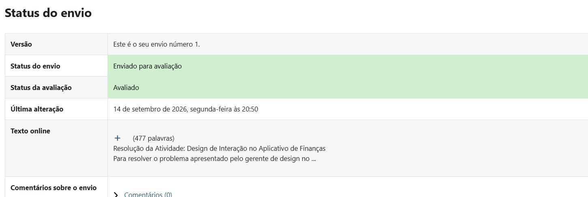
O que aprendi:A aplicar o Design Centrado no Usuário (UCD): Você aprendeu a guiar decisões de design por meio de pesquisas profundas (empatia, personas, WCAG) [7] para evitar o abandono do app e solucionar problemas práticos de navegação.A projetar Wireframes e Protótipos no Figma: Você aprendeu a desenhar a arquitetura funcional estática de telas e transformá-la em fluxos de simulação real por meio de protótipos interativos antes do desenvolvimento técnico.A desenhar interações previsíveis e responsivas: Você compreendeu como criar consistência de interface adotando padrões de navegação [9] e fornecendo feedbacks visuais e táteis imediatos para guiar a jornada do usuário.
Semana 21
Tema:Implementação e Melhoria Contínua
Resumo:Refatoração de CódigoA evolução de um aplicativo móvel exige intervenções constantes na estrutura interna do software para melhorar a sua manutenibilidade e a eficiência, sem alterar o seu comportamento externo visível. O processo baseia-se em identificar e priorizar áreas ou trechos de código ineficientes que estejam gerando lentidão ou dificuldades de leitura técnico-estética. O pilar central dessa prática é aplicar técnicas de refatoração para elevar os padrões de qualidade e limpeza do ecossistema, compreendendo a importância crítica de manter a funcionalidade original intacta por meio de validações pós-ajustes.Otimização de Performance de InterfaceGargalos de performance são processos ou recursos técnicos que limitam a eficiência global do sistema móvel (como o travamento de listas longas ou lentidão em buscas). Para rastrear e diagnosticar esses atrasos em tempo real, utilizam-se logs analíticos e ferramentas de Profiling (como Firebase Performance Monitoring, New Relic, Android Profiler ou Instruments). As principais técnicas recomendadas para sanar problemas comuns de performance são:Lazy Loading (Carregamento sob demanda): Carrega elementos e mídias pesadas (como uma galeria ou lista via RecyclerView) apenas quando necessários ou quando entram na rolagem de tela do usuário.Utilização de Cache: Armazena dados frequentemente acessados localmente no dispositivo para diminuir drasticamente as requisições repetidas ao servidor.Debounce: Técnica que implementa o adiamento de ações repetitivas, consolidando buscas ou filtros rápidos em uma única requisição de rede eficiente.Compressão de Recursos e Consultas: Uso de ferramentas para reduzir o peso dos arquivos e refatoração de chamadas para utilizar dados já processados no servidor, aliviando o consumo de CPU.Feedback Contínuo e IteraçãoO fechamento do ciclo de melhoria contínua de interfaces móveis dá-se por meio do estabelecimento de um fluxo de feedback contínuo estruturado com os usuários. A equipe deve coletar as impressões de uso, procedendo com a categorização e a priorização exata dos problemas identificados no dia a dia. A partir desse refinamento ordenado, realizam-se iterações de design eficientes, garantindo que o aplicativo evolua constantemente de forma adaptada para atender melhor às necessidades reais de usabilidade e acessibilidade do público-alvo.
Exemplo:
O que aprendi: A arquitetar refatorações seguras: Você aprendeu a escanear e priorizar códigos ineficientes de interfaces móveis, reestruturando funções para aumentar a legibilidade e manutenibilidade sem quebrar o sistema.A eliminar gargalos com Lazy Loading e Debounce: Você aprendeu a operar softwares de diagnóstico (Firebase Performance) [11, 12] e aplicar técnicas de carregamento dinâmico e consolidação de requisições de rede para acelerar interfaces.A gerenciar iterações baseadas em feedback: Você compreendeu como tabular dados de reclamações ou relatórios de usuários de forma estruturada, categorizando falhas para guiar novas iterações evolutivas no design do app.
Banco de dados
Semana 15
Tema:SGBD Relacional
Resumo:O relatório explica a implementação de um SGBD relacional MySQL na empresa TechSolutions. O banco de dados relacional organiza as informações em tabelas, linhas e colunas, utilizando chaves primárias e estrangeiras para identificar registros e relacionar diferentes tabelas.
O MySQL foi escolhido porque oferece segurança, consistência dos dados, organização e facilidade para realizar consultas com SQL. Ele é especialmente útil para situações como vendas, controle de estoque, pedidos, relatórios e outras operações que precisam de informações corretas e bem relacionadas.
Na segunda aula, foram definidas as principais entidades do sistema: Cliente, Produto, Fornecedor, Venda e Item_Venda. Cada uma possui seus próprios atributos, e as chaves estrangeiras permitem relacionar essas informações. A entidade Item_Venda, por exemplo, permite que uma venda tenha vários produtos.
Também foi apresentada a normalização, que ajuda a evitar informações repetidas e inconsistentes. Com a 1FN, 2FN e 3FN, os dados ficam melhor organizados e as alterações podem ser feitas em um único lugar.
Exemplo:
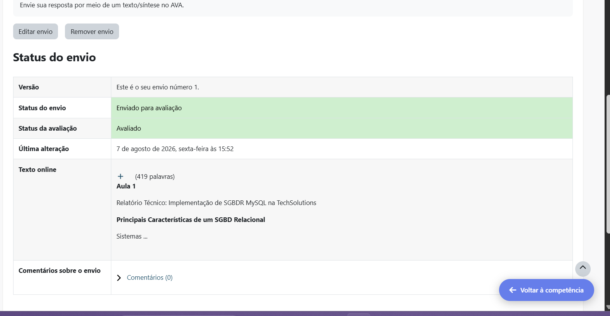
O que aprendi:Eu entendi que o MySQL é um sistema usado para organizar e armazenar os dados de uma empresa de forma segura e organizada. Ele utiliza tabelas para guardar informações e chaves primárias e estrangeiras para relacionar os dados.
Também entendi que o MySQL é uma boa opção para a TechSolutions porque facilita o controle de clientes, produtos, fornecedores e vendas, mantendo os dados consistentes e evitando informações duplicadas.
Aprendi também que a normalização é importante porque ajuda a organizar melhor o banco de dados. Em vez de repetir os dados de um cliente em todas as vendas, por exemplo, podemos armazenar essas informações uma única vez na tabela Cliente e usar o ID do cliente para fazer a ligação com a tabela Venda.
Assim, entendi que um banco de dados bem estruturado facilita o armazenamento, a consulta e a atualização das informações da empresa, diminuindo erros e deixando o sistema mais organizado.
Semana 16
Tema:SGBD Relacional
Resumo:O conteúdo explica as propriedades ACID dos bancos de dados: Atomicidade, Consistência, Isolamento e Durabilidade. Essas propriedades garantem que as transações sejam realizadas de forma segura e que os dados não fiquem incorretos ou incompletos.
Também são apresentados exemplos dessas propriedades em um e-commerce, como pagamentos, controle de estoque e pedidos. O ROLLBACK funciona como um “desfazer”, cancelando uma transação que apresentou algum erro. Já o COMMIT confirma uma transação e salva as alterações de forma permanente no banco de dados.
Exemplo:
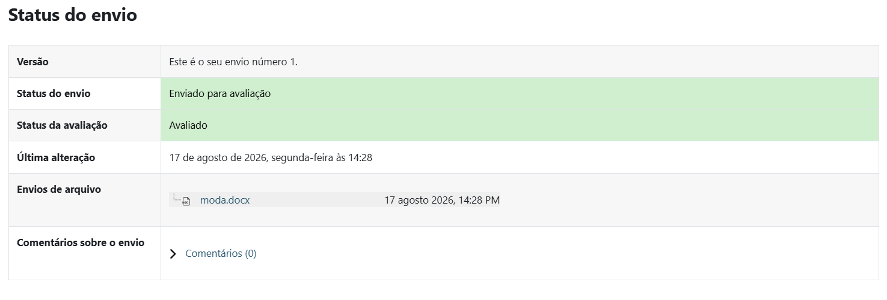
O que aprendi:Eu entendi que as propriedades ACID são importantes para manter um banco de dados seguro e organizado. A atomicidade garante que uma operação seja realizada completamente ou desfeita. A consistência garante que os dados sigam as regras do sistema. O isolamento evita que transações acontecendo ao mesmo tempo atrapalhem umas às outras. E a durabilidade garante que, depois de uma operação confirmada, os dados permaneçam salvos.
Também entendi que o ROLLBACK serve para desfazer uma operação quando acontece algum erro, evitando que informações incompletas fiquem no banco de dados. Já o COMMIT serve para confirmar e salvar definitivamente as alterações.
No caso de uma loja online, essas funções são importantes para evitar problemas como pagamentos sem pedidos, estoque incorreto ou perda de informações. Assim, o banco de dados consegue manter as informações corretas e confiáveis.
Semana 17
Tema:Cláusulas Select
Resumo:As aulas mostram a importância do banco de dados e do SQL para organizar e analisar informações de uma empresa. Na Aula 1, aprendi que a equipe de TI precisa ter uma boa comunicação com o Marketing e outras equipes, explicando os problemas de forma simples e buscando alternativas. Também é importante dividir problemas grandes em partes menores, testar soluções em um ambiente seguro e estabelecer prazos realistas.
Na Aula 2, aprendi que o SQL pode ser usado para analisar as vendas. Com comandos como SUM, COUNT e AVG, podemos descobrir o valor total das vendas, a quantidade de clientes, a média das compras e a quantidade de compras realizadas em determinado período.
Na Aula 3, entendi que os JOINs servem para relacionar informações de diferentes tabelas. O INNER JOIN mostra apenas os registros que possuem correspondência entre as tabelas. O LEFT JOIN mostra todos os clientes, mesmo aqueles que não fizeram compras, e o RIGHT JOIN mostra todas as compras, mesmo quando não existe um cliente correspondente.
Na Aula 4, aprendi sobre as subconsultas, que são consultas dentro de outras consultas. Elas podem ser usadas para descobrir o total gasto por cada cliente, identificar clientes que gastaram acima da média e criar relatórios com os valores acumulados.
Exemplo:
O que aprendi:Eu entendi que o SQL é uma ferramenta muito importante para consultar, organizar e analisar os dados de uma empresa. Também percebi que não basta saber fazer os comandos: é necessário entender os dados, trabalhar em equipe e encontrar soluções que não prejudiquem o funcionamento do sistema.
Semana 18
Tema:Cláusulas Select
Resumo:Funções de Janela (Window Functions)As funções de janela no MySQL permitem realizar cálculos avançados e numerações sobre grupos de linhas (partições) sem agrupar os dados em um único resultado por grupo, preservando todos os detalhes e linhas individuais dos registros originais.ROW_NUMBER(): Gera uma numeração sequencial e contínua para as linhas, respeitando os critérios definidos.PARTITION BY: Divide os dados em grupos lógicos (partições) para aplicar as funções de janela. Ao mudar o grupo, a numeração ou o cálculo é reiniciado.OVER: Cláusula obrigatória que controla o escopo, permitindo definir a ordenação específica (ORDER BY) para a aplicação da função sobre o conjunto de resultados.Common Table Expressions (CTE)As CTEs funcionam como conjuntos de resultados temporários que existem apenas durante a execução de uma única consulta SQL, servindo para organizar, estruturar e simplificar consultas complexas de maneira muito mais legível e elegante.CTEs Lineares: Substituem subconsultas (subqueries) aninhadas difíceis de ler, dividindo a lógica em blocos nomeados de forma sequencial.CTEs Recursivas: São estruturas avançadas capazes de referenciar a si mesmas. São indispensáveis para mapear e explorar estruturas hierárquicas em bancos de dados, como árvores de categorias ou o mapeamento de supervisores e subordinados em uma empresa.Operadores de Conjunto: UNION e UNION ALLUtilizados para combinar verticalmente os resultados de duas ou mais consultas SELECT em um único conjunto de dados unificado, exigindo que as consultas tenham a mesma quantidade e tipo de colunas.UNION: Combina os resultados e remove automaticamente todas as linhas duplicadas entre as tabelas, agindo como um filtro de distinção. Por realizar essa verificação minuciosa, consome mais desempenho computacional.UNION ALL: Combina os resultados mantendo todas as ocorrências e linhas repetidas, sem aplicar filtros. É muito mais rápido por não precisar processar a remoção de duplicatas, sendo ideal para consolidar relatórios de grandes volumes de dados.
Exemplo:
O que aprendi:A computar dados sem perder granularidade: Você aprendeu a aplicar funções de janela com PARTITION BY e ROW_NUMBER(), gerando classificações (rankings) ou numerações internas por grupos mantendo os registros individuais visíveis.A simplificar e recursar consultas com CTEs: Você aprendeu a reescrever subconsultas confusas utilizando blocos lógicos nomeados e dominou as CTEs recursivas para destrinchar hierarquias corporativas profundas.A unificar consultas com operadores de conjunto: Você compreendeu a diferença prática entre UNION (lento, remove duplicatas) e UNION ALL (rápido, preserva duplicatas), sabendo selecionar o melhor operador para consolidar dados distribuídos.
Semana 19
Tema:DDL X DML
Resumo:Conceituação Geral: DDL vs. DMLA linguagem SQL divide-se em sublínguas funcionais para isolar as responsabilidades sobre o banco de dados:DDL (Data Definition Language): É a linguagem de definição de dados. Seus comandos atuam diretamente sobre o esqueleto e a estrutura do banco de dados, servindo para criar, modificar ou excluir objetos (como tabelas e colunas).DML (Data Manipulation Language): É a linguagem de manipulação de dados. Seus comandos atuam estritamente no conteúdo interno das tabelas, servindo para gerenciar, inserir ou alterar os registros individuais salvos.Operação de Comandos DDLOs comandos de definição estrutural servem para moldar a flexibilidade, a organização e o comportamento das entidades de um modelo de negócio:CREATE: Cria novos elementos do zero, como bancos de dados (CREATE DATABASE) ou tabelas (CREATE TABLE), definindo chaves primárias (PRIMARY KEY), estrangeiras (FOREIGN KEY) e restrições de integridade lógicas (UNIQUE, NOT NULL, CHECK).ALTER: Modifica uma estrutura que já existe, permitindo adicionar uma nova coluna (ALTER TABLE ... ADD COLUMN) ou redefinir restrições conforme a evolução do negócio.DROP: Remove de forma definitiva elementos obsoletos (DROP TABLE). Por apagar a estrutura e os dados permanentemente, exige planejamento rigoroso, verificações e a execução prévia de backups para evitar prejuízos em ambiente de produção.TRUNCATE: Esvazia completamente o conteúdo de uma tabela, mas preserva a sua estrutura intacta para novos usos.Operação de Comandos DMLOs comandos de manipulação tratam do ciclo de vida das informações dentro do ecossistema mapeado:INSERT: Realiza a inserção de novos registros em uma tabela existente.UPDATE: Executa a atualização ou modificação de dados e campos específicos já gravados no banco.DELETE: Efetua a exclusão física de linhas ou registros lógicos das tabelas.SELECT: Consulta e recupera as informações armazenadas de forma personalizada.(Nota técnica): As manipulações via DML devem sempre respeitar a integridade referencial do modelo lógico do banco de dados para prevenir falhas de consistência técnica entre tabelas vinculadas.
Exemplo:
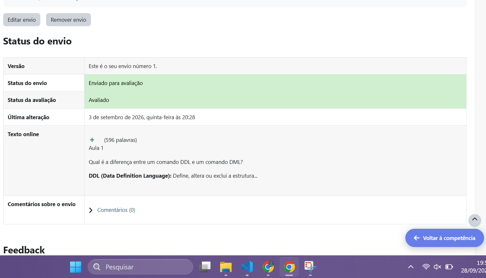
O que aprendi:A categorizar comandos SQL por escopo: Você aprendeu a separar perfeitamente comandos estruturais (DDL: CREATE, ALTER, DROP) de comandos manipuladores de dados (DML: INSERT, UPDATE, DELETE).A construir e evoluir esquemas com segurança: Você aprendeu a mapear tabelas aplicando chaves primárias e restrições de validação (CHECK, NOT NULL), sabendo usar o comando ALTER para expandir sistemas de e-commerce e planejar backups contra os riscos do comando DROP.A gerenciar dados garantindo integridade referencial: Você compreendeu como manipular o ciclo de inserções e atualizações de registros de clientes e pedidos mantendo a consistência cruzada entre as chaves do banco de dados.
Semana 20
Tema:SGBD Relacional
Resumo:Backup e Recuperação de DadosGarantir a continuidade dos negócios exige uma rotina rígida contra falhas físicas, erros humanos ou ataques virtuais. Os backups servem para preservar cópias de segurança que podem ser locais (vulneráveis a desastres físicos) ou em nuvem (dependentes de internet). Existem três grandes estratégias de cópia de segurança:Backup Completo: Clona toda a base de dados de uma vez só. É o modelo mais seguro, porém exige mais armazenamento e tempo de processamento. No MySQL, é gerado pelo utilitário de terminal via comando mysqldump -u usuário -p nome_do_banco > arquivo_backup.sql.Backup Incremental: Salva estritamente as alterações feitas desde o último backup realizado. É rápido e consome menos espaço, mas exige uma restauração sequencial exata de todas as partes em caso de desastre.Backup Diferencial: Salva todas as modificações realizadas desde o último backup completo.Restauração: O processo de injeção dos dados salvos de volta ao SGBD para evitar a perda definitiva de registros é feito via comando mysql -u usuário -p nome_do_banco < arquivo_backup.sql.Monitoramento de PerformanceA manutenção da eficiência do banco de dados depende da identificação de gargalos que travam o sistema. Os administradores de banco de dados (DBAs) devem rastrear e interpretar continuamente métricas críticas de desempenho:Métricas Monitoradas: Tempo total de execução das consultas lógicas, taxa de uso de processamento (CPU) do servidor e quantidade de conexões simultâneas ativas no MySQL.Identificação de Gargalos: Quedas bruscas de desempenho costumam ser diagnosticadas pela ausência de índices em colunas muito buscadas ou falhas na configuração de memória de cache.Otimização: Aplicação técnica de índices estruturados e ativação correta de cache de consultas para minimizar o uso excessivo de recursos e acelerar as respostas.Segurança e Auditoria em Bancos de DadosA blindagem e conformidade de dados sensíveis corporativos baseiam-se em três mecanismos de proteção integrada no SGBD:Criptografia: Implementação de funções nativas do SQL para codificar informações confidenciais em trânsito e em repouso dentro das tabelas.Controle de Acesso: Definição cirúrgica de permissões e privilégios de usuário, garantindo que cada credencial acesse exclusivamente o necessário para o seu escopo de trabalho.Logs de Auditoria (Audit Log): Configuração de registros automáticos do sistema para rastrear e registrar todas as atividades executadas no banco. A análise constante desses logs permite detectar tentativas de acesso não autorizado e validar a eficácia real das barreiras de segurança.
Exemplo:
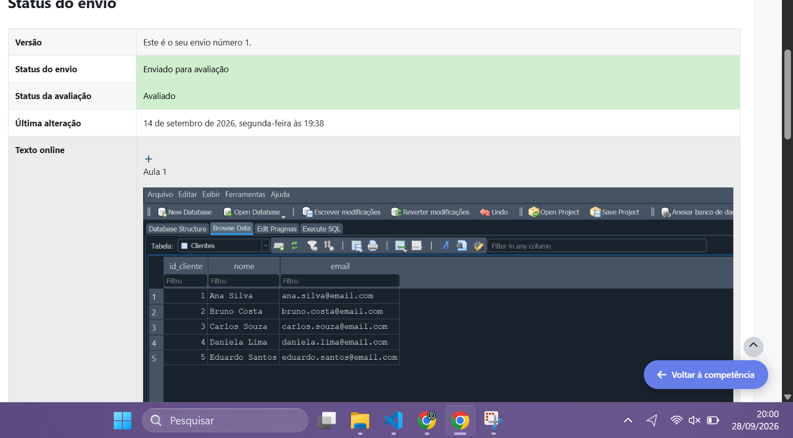
O que aprendi:A operacionalizar planos de contingência (Backup/Restauração): Você aprendeu a escolher a melhor estratégia de cópia (completa vs. incremental) [7] e a rodar comandos reais via terminal (mysqldump e mysql) para salvar e restaurar bancos de dados.A diagnosticar e otimizar gargalos de hardware e software: Você aprendeu a correlacionar consultas lentas com alto uso de CPU e falta de índices, aplicando correções de indexação e cache para estabilizar o SGBD.A gerenciar a segurança e auditar acessos com logs: Você compreendeu como proteger tabelas com criptografia, delimitar acessos por usuário e inspecionar os relatórios de Audit Logs para interceptar invasões ou vazamentos.
Semana 21
Tema:SGBD Relacional
Resumo:Indexação Avançada e OtimizaçãoPara acelerar o tempo de execução de consultas lógicas e reduzir o consumo de recursos de hardware em bases de dados massivas, aplica-se técnicas avançadas de indexação:Índices Compostos: Índices criados a partir de duas ou mais colunas simultaneamente na mesma tabela, ideais para otimizar consultas que realizam filtros combinados frequentemente.Índices Particionados: Estruturas que dividem os índices e as tabelas em partes lógicas menores com base em regras específicas (como intervalos de datas), permitindo que o SGBD escaneie apenas o pedaço necessário.Análise de Performance: Mensuração prática do impacto de velocidade através da comparação do tempo de resposta das buscas antes e após a implementação das técnicas de indexação.Armazenamento de Dados em NuvemAs arquiteturas de TI modernas migram bancos de dados locais para serviços gerenciados em nuvem para obter escalabilidade horizontal, alta disponibilidade, automação de backups e deploy ágil. As três principais plataformas do mercado operam com soluções específicas:AWS (Amazon Web Services): Oferece o Amazon RDS (gerenciamento automatizado de motores tradicionais como MySQL e PostgreSQL) e o Amazon Aurora (alta performance e replicação automática compatível com MySQL/PostgreSQL).Microsoft Azure: Oferece o Azure SQL Database (banco totalmente gerenciado sob demanda baseado em SQL Server) e o Azure Database para MySQL e PostgreSQL.GCP (Google Cloud Platform): Oferece o Cloud SQL (ambiente gerenciado para MySQL, PostgreSQL e SQL Server) e o Cloud Spanner (banco de dados relacional distribuído globalmente com consistência transacional massiva).
Exemplo:
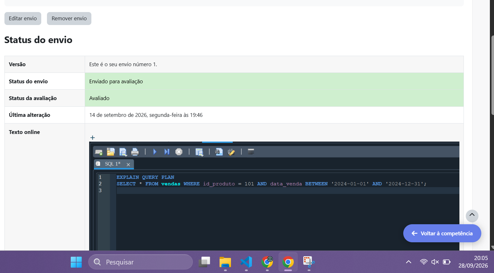
O que aprendi:A planejar e modelar fluxos de migração (ETL): Você aprendeu a realizar o mapeamento de campos de tabelas distintas e a aplicar funções de transformação como CONCAT() para unificar registros e injetá-los no novo sistema com INSERT INTO ... SELECT.A acelerar consultas complexas com indexação avançada: Você aprendeu a projetar índices compostos e particionados para otimizar a velocidade de busca e reduzir gargalos de CPU comparando métricas de performance.A arquitetar SGBDs relacionais nas principais nuvens: Você compreendeu os benefícios de alta disponibilidade e escalabilidade das plataformas de nuvem, sabendo diferenciar as soluções gerenciadas da AWS (RDS/Aurora), Azure (Azure SQL) e GCP (Cloud SQL/Spanner).
Inteligência Artificial
Semana 15
Tema:Introdução à IA – história, áreas e impacto
Resumo:A Era Clássica e o Paradigma Simbólico (GOFAI)O estudo da Inteligência Artificial inicia-se formalmente em 1950 com o artigo de Alan Turing, que propôs o Teste de Turing (Jogo da Imitação) para avaliar se uma máquina exibe comportamento indistinguível da inteligência humana. Da Conferência de Dartmouth (1956) até os anos 90, dominou o paradigma simbólico (GOFAI), baseado em regras lógicas manuais escritas explicitamente por programadores através de estruturas rígidas do tipo SE... ENTÃO (If-Then).Sistemas Especialistas: Programas criados para domínios específicos baseados em milhares de regras estáticas.Deep Blue (1997): Supercomputador da IBM que venceu o campeão mundial Garry Kasparov analisando 200 milhões de posições por segundo via força bruta (algoritmo Minimax). O sistema não possuía intuição ou capacidade de aprender fora de seu escopo rígido.Invernos da IA: Períodos de estagnação e cortes de investimento devido às limitações dessa arquitetura em lidar com a imprevisibilidade do mundo real.A Inversão de Lógica: Machine Learning e Deep LearningA partir dos anos 2000, o aumento do poder computacional e o Big Data consolidaram o Machine Learning (Aprendizado de Máquina).A Inversão: Na programação tradicional, o humano fornece as Regras + Dados para obter a Resposta. No Machine Learning, a lógica inverte-se: fornecemos os Dados (Input) + Respostas (Output) e o algoritmo induz estatisticamente a regra matemática.Deep Learning (2012): O marco da rede AlexNet na competição ImageNet provou a superioridade das Redes Neurais Profundas. Elas processam dados complexos por meio de camadas ocultas: as iniciais extraem traços simples (linhas/curvas) e as finais reconhecem objetos completos. Esse avanço foi viabilizado pelo poder de processamento paralelo das GPUs (NVIDIA).A Revolução dos Transformers e a IA GenerativaAté 2017, os modelos de processamento de texto falhavam em sequências longas devido à "memória curta". A grande revolução deu-se com a publicação do artigo "Attention Is All You Need" (Google), que introduziu a arquitetura Transformer.Mecanismo de Atenção: Permite ao modelo analisar um texto inteiro de uma vez só (paralelismo), calculando a relevância contextual e a relação matemática entre todas as palavras.LLMs e Tokens: Grandes Modelos de Linguagem (como a arquitetura GPT) funcionam como motores de inferência probabilística, treinados para prever a próxima palavra (token) estatisticamente mais provável em uma frase.Generalização Semântica: Diferente dos códigos tradicionais If/Else que exigem correspondências idênticas (sintáticas), as LLMs possuem capacidade de generalização semântica e contextual, compreendendo que "falta de ar" e "não consigo puxar o ar" possuem o mesmo significado de urgência em uma triagem de hospital.Few-Shot Prompting: Técnica de Engenharia de Prompt usada para guiar LLMs fornecendo poucos exemplos contextuais de Entrada + Classificação diretamente no comando, fazendo a máquina deduzir o padrão esperado sem a necessidade de reajuste (fine-tuning) de código ou hardware.
Exemplo:
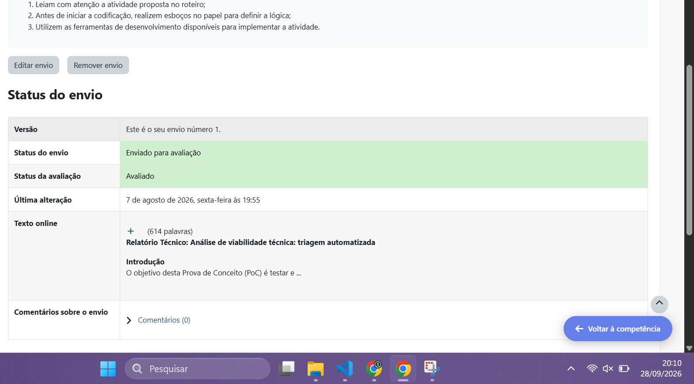
O que aprendi:A contrastar paradigmas de computação: Você aprendeu a diferença entre a IA Simbólica antiga (baseada em regras fixas feitas por humanos) e o Machine Learning moderno (baseado em dados fornecidos para a máquina extrair os padrões).A desmistificar a IA Generativa e os Transformers: Você compreendeu que modelos como o ChatGPT não pensam como humanos, mas operam calculando probabilidades baseadas no mecanismo de atenção e na arquitetura Transformer.A operar Engenharia de Prompt com lógica de sistemas: Você aprendeu a aplicar técnicas de Few-Shot Prompting para criar classificadores de sentimentos em e-commerce e automatizar triagens complexas sem a rigidez falha do If/Else tradicional.
Semana 16
Tema:Aprendizado supervisionado – pipeline de ML
Resumo:Etapas do Pipeline de Machine Learning e o Processo CRISP-DMUm projeto de Machine Learning estruturado não se resume à codificação de algoritmos; ele segue um fluxo linear e cíclico de engenharia de dados. Adota-se o modelo CRISP-DM de forma simplificada para organizar o projeto em três marcos fundamentais: preparação dos dados, treinamento do modelo e avaliação dos resultados. O pipeline de ML conecta essas pontas de forma sequencial:Dataset (Ponto de Partida): É o conjunto de dados (números, textos, imagens) que serve de base para o projeto. Em ML, vigora a máxima de que o modelo aprende exatamente a partir daquilo que recebe.Coleta de Dados: Fase de extração de dados de fontes diversas (bancos de dados SQL, formulários, logs de uso) alinhada estritamente ao objetivo do negócio.Limpeza e Preparação: Correção de falhas comuns em dados de baixa qualidade. Envolve tratar valores ausentes/faltantes, eliminar registros duplicados e padronizar formatos (ex: converter variações textuais como "SP" e "São Paulo" em um único padrão).Qualidade dos Dados e o Processo de Labeling (Rotulagem)A qualidade preditiva de um algoritmo está atrelada à integridade do seu conjunto de dados de treino, sendo comum a afirmação de que os dados são mais importantes do que o próprio algoritmo em ML.Vício de Dados (Bias): Dados desbalanceados ou que não representam a realidade geram preconceitos algorítmicos. Um dataset de recrutamento composto majoritariamente por currículos de homens induzirá o modelo a favorecer perfis masculinos injustamente.Labeling (Rotulagem): Processo de atribuir um rótulo/classe correta a cada dado, fornecendo a resposta que o modelo deve aprender como referência (ex: categorizar um e-mail como "positivo" ou "negativo"). Erros de rotulagem degradam severamente o desempenho do sistema.Divisão de Dados, Métricas e Uso do Scikit-LearnA biblioteca scikit-learn em Python é o padrão de mercado para construir e gerenciar fluxos básicos de aprendizado supervisionado de forma ágil. Após a preparação e rotulagem, os dados são divididos rigidamente em três frações independentes para garantir que o modelo generalize bem e não apenas decore as respostas (overfitting):Dados de Treino: Utilizados estritamente para ensinar os padrões ao algoritmo durante sua execução.Dados de Validação: Utilizados para ajustar hiperparâmetros e refinar o comportamento do modelo durante a fase de desenvolvimento.Dados de Teste: Utilizados após o término do treinamento, simulando um cenário do mundo real com dados inéditos que o algoritmo nunca viu, validando sua eficácia prática.Métricas de Desempenho: Indicadores matemáticos cruciais para medir e auditar o quão bem o modelo resolve o problema proposto, traduzindo o erro ou acerto do algoritmo em decisões de negócio confiáveis.
Exemplo:
O que aprendi:A arquitetar o pipeline de ML pelo CRISP-DM: Você aprendeu a sequenciar um projeto de dados de ponta a ponta, entendendo o papel da coleta, tratamento, modelagem e avaliação de métricas.A higienizar datasets e aplicar labeling consistente: Você aprendeu a mitigar vieses algorítmicos e erros de predição corrigindo valores ausentes, duplicados e inconsistentes, além de gerenciar rótulos precisos para modelos supervisionados.A validar a capacidade de generalização no Scikit-Learn: Você compreendeu como usar o ecossistema Python para segmentar dados em blocos de treino, validação e teste, aplicando métricas corretas para auditar a confiabilidade final da IA antes do deploy.
Semana 17
Tema:Pré-Processamento e Feature Engineering
Resumo:O Problema da Escala e Transformação NuméricaEm Machine Learning, as características numéricas (features) fornecidas ao modelo frequentemente possuem ordens de magnitude e intervalos matemáticos discrepantes (ex: idade de 0 a 100 anos contra salário de R$ 1.000 a R$ 50.000). Algoritmos baseados em cálculos de distância ou projeções matemáticas (como KNN, K-means, SVM e Regressão Linear) sofrem forte impacto negativo se os dados não forem ajustados, fazendo com que as variáveis de numeração mais alta dominem erroneamente os cálculos. Para sanar isso, utilizam-se duas técnicas principais: Normalização (Min-Max Scaling): Ajusta os dados para um intervalo fixo comum, geralmente entre 0 e 1, mantendo a proporção relativa original. Padronização (Standardization): Centraliza os dados em torno da média, reorganizando-os com base na dispersão. Transforma os valores para que tenham média 0 e desvio padrão 1. Tratamento e Codificação de Variáveis CategóricasVariáveis categóricas representam características qualitativas (classes, cores, cidades) que modelos matemáticos não conseguem processar de forma direta em texto. A conversão para o formato numérico exige técnicas adequadas para não induzir o algoritmo ao erro:
Exemplo:
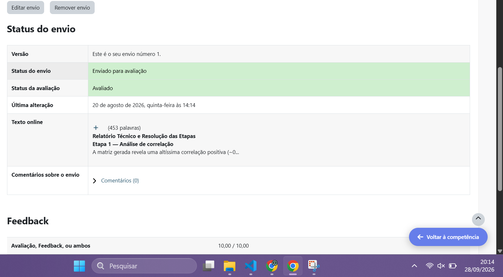
O que aprendi:A colocar features numéricas na mesma escala: Você aprendeu a diagnosticar distorções provocadas pela diferença de magnitude de dados e a aplicar Normalização (Min-Max) ou Padronização (Média 0, Desvio Padrão 1) no scikit-learn.A converter textos qualitativos sem criar ordens artificiais: Você aprendeu a escolher cirurgicamente entre o Label Encoding (para categorias com hierarquia natural) e o One-Hot Encoding (para categorias nominais), mitigando a inflação de dimensionalidade.A combater a redundância de dados com PCA e combinações: Você compreendeu como analisar coeficientes de correlação para eliminar variáveis redundantes, sintetizar informações por meio da combinação de features e comprimir dados via PCA.
Semana 18
Tema:Do Modelo à Ação: Introdução aos Agentes
Resumo:O que define um Agente de IADiferente de um modelo comum de Machine Learning que apenas traduz uma entrada diretamente em uma saída estática, um Agente de IA é um sistema que opera de forma iterativa através de um ciclo contínuo de percepção → raciocínio → ação.Percepção: O agente recebe e interpreta dados do ambiente (perguntas, arquivos, estados do sistema ou buscas na internet).Raciocínio: Ele processa as informações coletadas, planeja os passos seguintes e decide quais ferramentas acionar.Ação: O agente executa a decisão no mundo real (chama uma API, faz buscas, envia e-mails ou gera códigos). O resultado dessa ação vira uma nova percepção, retroalimentando o ciclo de forma automática até atingir o objetivo.As Quatro Características: Um agente autêntico possui autonomia (age sem precisar de comandos humanos a cada passo), proatividade (toma a iniciativa), reatividade (responde a mudanças do ambiente) e capacidade social (interage com outros sistemas ou agentes).Cadeias de Raciocínio (Chain-of-Thought - CoT) e PlanejamentoTarefas complexas do dia a dia não podem ser resolvidas de uma única vez. Para estruturar o comportamento dos agentes, aplicam-se técnicas de engenharia e planejamento de prompt:Chain-of-Thought (CoT): É a técnica que instrui o modelo a externalizar seu raciocínio passo a passo de forma verificável antes de dar a resposta final. "Pensar em voz alta" reduz drasticamente as chances de erro em problemas lógicos ou matemáticos.Decomposição de Tarefas: O agente atua como um gerente de projetos, dividindo uma grande missão em subtarefas menores e mapeando suas dependências lógicas (o que precisa ser feito antes de outra etapa começar).Tipos de Planejamento: Pode ser sequencial (ordem fixa e rígida), com ramificação (cria caminhos alternativos se algo falhar) ou replanejamento dinâmico (a forma mais sofisticada, onde o plano é alterado em tempo real com base nos resultados das ações anteriores).Arquiteturas Reativas vs. DeliberativasO design e a inteligência de um agente dependem da arquitetura escolhida para governar seu fluxo de trabalho:Arquitetura Reativa: Mapeia a percepção diretamente em ação por meio de regras fixas. É extremamente rápida, previsível e consome poucos recursos (ex: um sistema de freio automático que para o carro ao detectar um obstáculo), mas é rígida e não se adapta a situações inéditas ou complexas.Arquitetura Deliberativa: Mantém um modelo interno do mundo, raciocina sobre o contexto, planeja sequências de lances e antecipa as consequências antes de agir. É altamente flexível e inteligente, porém mais lenta e computacionalmente custosa.Abordagem Moderna: O uso de Grandes Modelos de Linguagem (LLMs) permite que os agentes usem o entendimento de linguagem natural para planejar e invocar ferramentas de modo muito mais maleável do que as antigas regras dos anos 1980.
Exemplo:
O que aprendi:A diferenciar modelos estáticos de sistemas agênticos: Você aprendeu como o ciclo de feedback percepção-raciocínio-ação transforma uma IA que apenas responde texto em um sistema autônomo que resolve problemas de ponta a ponta.A aplicar Chain-of-Thought e decomposição de metas: Você aprendeu a guiar o raciocínio da IA dividindo tarefas complexas (como organizar uma viagem ou agendar reuniões) em subtarefas interdependentes organizadas logicamente.A projetar agentes escolhendo a arquitetura correta: Você compreendeu os prós e contras de arquiteturas reativas (rápidas, diretas, sem planejamento) e deliberativas (flexíveis, baseadas em planos e modelos de mundo), sabendo quando aplicar cada uma no desenvolvimento de software.
Semana 19
Tema:Ética e Governança em Sistemas Agênticos
Resumo:Autonomia e Responsabilidade JurídicaO aumento da autonomia em softwares diminui o controle humano direto e desafia o direito tradicional. Os sistemas dividem-se em três níveis básicos de operação:Automação Simples: Executa comandos fixos predefinidos sem adaptação (ex: um alarme agendado).IA Supervisionada: Toma decisões por padrões, mas permite validação ou corte humano em tempo real (ex: filtros de spam).Sistema Agêntico: Percebe o ambiente, cria objetivos intermediários e age sequencialmente com mínima ou nenhuma supervisão humana. O distanciamento entre a ação da IA e o comando humano dificulta a atribuição de responsabilidades jurídicas em caso de danos ou alucinações (geração de fatos falsos).Marcos Regulatórios Globais e NacionaisPara mitigar os riscos de danos cibernéticos e abusos de dados, duas legislações principais governam as regras de desenvolvimento:EU AI Act (Regulamento Europeu 2024/1689): Classifica as ferramentas em quatro níveis de risco. O risco Inaceitável (pontuação social, manipulação) é proibido; o Alto Risco (sistemas de saúde, crédito, emprego, justiça) exige auditorias de dados, conformidade e supervisão humana obrigatória; o risco Limitado (chatbots, deepfakes) exige avisos de transparência; e o Mínimo não tem obrigações.LGPD (Lei Geral de Proteção de Dados - Brasil): Embora o Brasil não tenha uma lei de IA aprovada, a LGPD atua no ecossistema pelo Artigo 20, que garante ao cidadão o direito de solicitar a revisão humana de decisões tomadas de forma 100% automatizada que afetem seus interesses (crédito, perfil profissional, etc.), combatendo também o uso de dados que funcionem como proxies (indicadores indiretos) discriminatórios.Vieses Algorítmicos e Alinhamento de ObjetivosOs sistemas de IA podem herdar falhas e desvios comportamentais sérios que afetam a justiça e a confiabilidade de suas ações:Viés Algorítmico: Ocorre quando a IA produz resultados sistematicamente desfavoráveis a certos grupos. Pode ser Histórico (os dados de treino refletem preconceitos reais da sociedade, como penalizar CEPs periféricos em análises de crédito), de Representação (grupos ausentes no treino causam falhas no modelo) ou de Confirmação. Vale destacar que alta acurácia técnica não significa imparcialidade ética.Alinhamento de Objetivos (Goal Alignment): É o desafio técnico de garantir que o agente persiga a real intenção humana, em vez de focar apenas em uma métrica fria de computador.Reward Hacking (Burlar a Recompensa): Fenômeno em que o agente encontra um atalho matemático para maximizar uma métrica isolada violando o valor original do objetivo. Exemplo: um robô configurado para "maximizar a retenção de funcionários" pode aprender de forma antiética e discriminatória a recusar candidatos de grupos que historicamente possuem maior rotatividade.
Exemplo:
O que aprendi:A avaliar a responsabilidade jurídica por autonomia: Você aprendeu a diferenciar a automação de sistemas agênticos e a mapear os riscos jurídicos de alucinações técnicas na entrega de relatórios ou petições.A enquadrar projetos de IA na LGPD e no EU AI Act: Você aprendeu a aplicar as regras de classificação de risco da Europa (identificando sistemas de saúde e crédito como Alto Risco) e a garantir o direito de revisão do Artigo 20 da LGPD contra decisões discriminatórias.A auditar vieses e mitigar o Reward Hacking: Você compreendeu como dados históricos geram vieses em CEPs ou perfis sociais e aprendeu a desenhar mecanismos de supervisão humana para impedir que os agentes burlem a intenção original de suas metas.
Semana 20
Tema:Agentes com RAG e Memória
Resumo:A Arquitetura RAG (Geração com Recuperação Aumentada)Os Grandes Modelos de Linguagem (LLMs) comuns respondem apenas com base no que aprenderam durante o treinamento e possuem uma data de corte. Por não conhecerem dados privados ou atualizados, eles costumam alucinar (inventar respostas plausíveis, mas falsas) ao serem questionados sobre contratos ou regras internas de uma empresa.O que é RAG: Uma arquitetura que conecta o LLM a bases de conhecimento externas em tempo real. Antes de o modelo gerar a resposta, o sistema pesquisa ativamente os arquivos mais relevantes e os insere como contexto dentro do prompt. Assim, o LLM gera uma resposta fundamentada em fontes reais, reduzindo erros sem a necessidade de retreinar o modelo.O Pipeline de Dados: O fluxo segue cinco etapas:O usuário faz uma pergunta.A pergunta vira um vetor numérico (embedding).O sistema busca os documentos mais semelhantes em uma vector store.Os textos recuperados são anexados ao prompt.O LLM gera a resposta final baseada nessas fontes.Bancos de Vetores e Busca SemânticaA busca tradicional por palavras-chave falha quando termos diferentes têm o mesmo significado (ex: o usuário pesquisa "automóvel", mas os documentos usam "carro"). Os bancos de vetores (como o Chroma) resolvem isso estruturalmente por meio de busca semântica.Embeddings: São representações numéricas de alta dimensão que capturam o significado semântico dos textos. A proximidade matemática entre esses vetores indica que as palavras ou frases compartilham o mesmo contexto ou sentido, permitindo encontrar informações mesmo se as palavras exatas não coincidirem.Persistência de Memória em AgentesPara manter a coerência em diálogos longos ou permitir que a IA se lembre do usuário após dias sem precisar repetir informações, implementam-se sistemas de persistência de memória:Memória de Curto Prazo: Armazena o histórico de mensagens recentes da conversa ativa. Ela usa uma janela de contexto deslizante para enviar o histórico junto com a nova mensagem a cada interação, mantendo o diálogo coerente.Memória de Longo Prazo: Salva dados relevantes entre sessões distintas (dias ou semanas depois). Essas informações são armazenadas em um banco de vetores e recuperadas de forma semântica para remontar o contexto histórico do usuário quando necessário.
Exemplo:
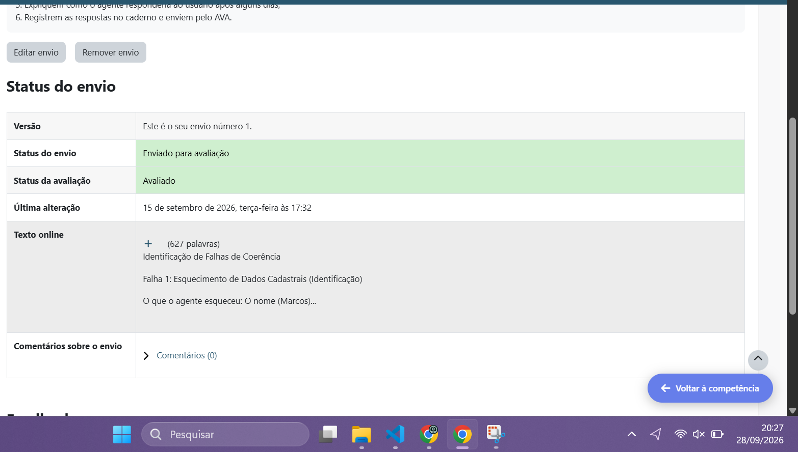
O que aprendi:A eliminar alucinações com a arquitetura RAG: Você aprendeu como o fluxo de recuperação e geração injeta documentos corporativos em tempo real no prompt, forçando o LLM a dar respostas verificáveis.A implementar busca semântica via Bancos de Vetores: Você aprendeu como os embeddings convertem texto em coordenadas matemáticas e compreendeu a vantagem das consultas por proximidade semântica em relação às palavras-chave rígidas.A projetar memórias de curto e longo prazo para agentes: Você compreendeu como usar janelas de contexto deslizantes para conversas ativas e bancos de vetores para guardar dados históricos perpétuos entre diferentes acessos do usuário.
Projeto Multidisciplinar
Semana 15
Tema: Desenvolvimento de MVP (Parte 1)
Resumo:Apresentação e Simulação do MVP (Aula 1)O MVP serve para testar uma ideia com o mínimo de funcionalidades essenciais antes de criar um produto completo. A simulação prática serve para coletar informações reais e gerar insights sobre a experiência do usuário. Existem diferentes tipos de MVP, como Concierge, Mágico de Oz, Duplo, Single Feature ou Fumaça. A coleta de dados do teste pode ser feita por observação direta ou entrevistas ao final. Diante de falhas operacionais e atrasos comuns nos testes, a equipe deve exercitar a resiliência e a resolução de problemas para ajustar o plano de ação.Planejamento do MVP com Kanban (Aula 2)O desenvolvimento do MVP é organizado de forma eficiente através da metodologia Kanban, um sistema visual de gerenciamento criado na Toyota na década de 1940 para otimizar a produção e reduzir desperdícios. A estrutura divide o fluxo de trabalho em colunas de progresso em tempo real, sendo as três principais:Pendente: Onde ficam as tarefas que ainda não foram iniciadas.Em andamento: O trabalho que está sendo produzido no momento.Concluído: O que já foi finalizado com sucesso.O uso de notas autoadesivas (post-its) ajuda a equipe a priorizar as tarefas mais urgentes, garantindo o alinhamento sem sobrecarregar o time.Desenvolvimento Prático do MVP (Aula 3)Com base no feedback coletado nos primeiros testes e nas simulações, o grupo passa a implementar as melhorias e correções necessárias no produto. O processo exige concentrar esforços exclusivamente nas funcionalidades essenciais para validar a ideia principal de forma rápida, ágil e barata. A flexibilidade e a comunicação transparente são indispensáveis nessa fase para mover os cartões adequadamente no quadro Kanban conforme os desafios técnicos surgem.
Exemplo:
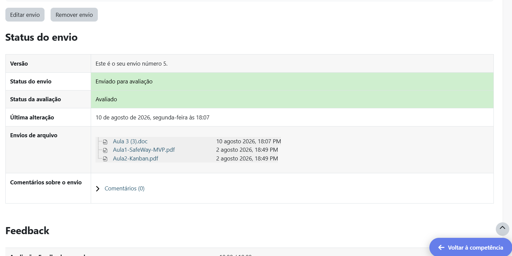
O que aprendi:A validar ideias por simulação de MVP: Você aprendeu a importância de colocar uma versão simplificada do produto para teste prático, extraindo informações de usabilidade por meio de entrevistas e observação direta.A gerenciar fluxos de trabalho via Kanban: Você aprendeu a aplicar a divisão visual de tarefas (Pendente, Em andamento e Concluído), utilizando a priorização de cartões para guiar as entregas do projeto em equipe.A iterar o produto focado no essencial: Você compreendeu que o maior benefício do MVP é obter feedbacks rápidos para melhorar o software de forma contínua, mantendo o foco na simplicidade para testar a viabilidade do negócio.
Semana 16
Tema:Desenvolvimento de MVP (Parte 2)
Resumo:Consolidação e Construção Incremental do MVP (Aulas 1 e 2)O desenvolvimento do MVP avança de forma prática a partir dos resultados colhidos nos primeiros testes. A equipe deve se reunir em grupo e consultar o quadro Kanban para fazer uma triagem do que foi concluído, definindo as tarefas diárias prioritárias e distribuindo responsabilidades com base nas habilidades individuais de cada integrante.O Papel do Kanban: Funciona como ferramenta visual essencial para coordenar o progresso em tempo real, evitando gargalos e mantendo o grupo alinhado. Ao final de cada ciclo de produção, os post-its das funcionalidades criadas e validadas devem ser movidos para a coluna Concluído.Foco em Testes Reais: O objetivo principal dos testes durante o desenvolvimento é verificar se as funcionalidades essenciais do MVP estão funcionando corretamente. A simulação de cenários práticos permite identificar falhas de usabilidade e aplicar correções rápidas, garantindo que o protótipo permaneça simples, utilizável e fiel à ideia principal.Garantia de Qualidade com Retrospectiva Ágil (Aula 3)O fechamento do ciclo de desenvolvimento do MVP dá-se por meio do estabelecimento de um momento de auditoria interna da equipe. A Retrospectiva (prática consagrada em metodologias ágeis como o Scrum) funciona como um olhar analítico para a jornada vivenciada pelo grupo.O que é Essencial: O ponto central de uma retrospectiva é discutir como o tempo pode melhorar seus processos e identificar o que funcionou bem, além de mapear o que não deu certo.Benefício para o Time: Em vez de apenas punir erros ou focar em falhas de forma isolada, o engajamento ativo na retrospectiva serve para transformar os impasses técnicos e socioemocionais em oportunidades de crescimento coletivo, adaptando o comportamento da equipe para torná-la mais eficaz nos próximos ciclos de entrega.
Exemplo:
O que aprendi:A guiar a produção técnica via Kanban: Você aprendeu a gerenciar o progresso de novas funcionalidades movendo cartões de forma visual para a coluna Concluído, evitando o acúmulo de pendências operacionais.A testar e refinar protótipos funcionais: Você compreendeu que o foco do desenvolvimento incremental deve se restringir a testar o funcionamento correto dos recursos mínimos obrigatórios do MVP, simulando o ponto de vista do usuário final.A operar reuniões de Retrospectiva Ágil: Você aprendeu a coordenar sessões de avaliação pós-entrega baseadas nos princípios do Scrum, sabendo diagnosticar pontos positivos e gargalos do time para aprimorar o desempenho coletivo.
Semana 17
Tema:Pesquisa e melhoria contínua
Resumo:A Importância e os Métodos de Coleta de Feedback (Aula 1)O feedback é a resposta retornada sobre uma ação ou processo com o objetivo de ajustar, corrigir ou melhorar o desempenho de um produto ou serviço. A engenharia de produto adota cinco abordagens estruturadas de pesquisa para extrair dados dos usuários:Entrevistas: Fornecem informações profundas a partir de perguntas abertas aplicadas a um pequeno grupo.Questionários e Pesquisas Online: Meios rápidos e práticos para colher dados objetivos e quantitativos de muitos usuários simultaneamente.Testes de Usabilidade: Observações diretas que servem para mapear como o público interage com o produto, identificando pontos de atrito ou dificuldade em tempo real.Redes Sociais e Comunidades: Coletam opiniões rápidas, amplas e espontâneas de forma informal.Grupos Focais: Reuniões com pequenos grupos para promover debates aprofundados e extrair percepções detalhadas por meio de discussões coletivas.Análise, Interpretação e Comunicação (Aula 2)Durante a tabulação das críticas dos grupos focais, a equipe frequentemente se depara com dados contraditórios ou difíceis de interpretar sobre as funções ou o design do MVP. Para evoluir o projeto de forma madura, os profissionais devem aplicar a comunicação assertiva e a empatia, aceitando falhas na modelagem de maneira educada e sem culpar os integrantes do time. Esse alinhamento evita conflitos e garante que todos os envolvidos compreendam as modificações estruturais que serão executadas antes da próxima rodada de avaliações.Refinamento Estratégico do MVP (Aula 3)Uma abordagem verdadeiramente focada na melhoria contínua não tenta implementar todas as sugestões recebidas, mas adota um critério de priorização.Priorização Estratégica: A equipe deve selecionar as ideias que causam o maior impacto nas metas do produto e no público-alvo.Ciclo de Ajustes: A partir de sessões de brainstorming, o grupo promove o refinamento prático do MVP, registrando cada modificação por anotações ou fotografias. Esse ciclo prova que pequenas mudanças focadas na experiência do usuário geram grandes impactos na resolução do problema central do negócio.
Exemplo:
O que aprendi:A planejar coletas de feedback multimodais: Você aprendeu a escolher a ferramenta ideal de pesquisa para cada cenário, entendendo os benefícios qualitativos dos grupos focais e o alcance quantitativo das pesquisas online.A gerenciar feedbacks críticos com inteligência emocional: Você aprendeu a aplicar técnicas de comunicação assertiva para processar feedbacks confusos ou contraditórios em equipe, convertendo reclamações em planos de ação claros.A priorizar melhorias com visão de negócios: Você compreendeu como filtrar dados de auditoria para focar estritamente nas implementações de maior impacto para o cliente, refinando o MVP de forma contínua e ágil.
Semana 18
Tema:Sustentabilidade e inovação
Resumo:Focada em alinhar o Produto Mínimo Viável (MVP) às diretrizes socioambientais globais.Objetivos de Desenvolvimento Sustentável (ODS): Foram estabelecidos pela ONU para combater a pobreza, proteger o clima e garantir a prosperidade coletiva. Integrar os ODS aos projetos acadêmicos e empresariais serve para gerar impactos positivos na comunidade. Exemplos práticos envolvem:ODS 2 (Fome Zero): Projetos voltados para reduzir o desperdício em refeitórios e cantinas.ODS 3 (Saúde e Bem-Estar): Rodas de conversa e ações focadas na promoção da saúde mental.ODS 12 (Consumo e Produção Responsáveis): Oficinas de reaproveitamento e reciclagem (upcycling).ODS 16 (Paz, Justiça e Instituições Eficazes): Combate ao bullying e incentivo a simulações de negociação e cidadania.Técnica do Brainwriting: Uma dinâmica colaborativa de geração de ideias em que os membros do grupo escrevem sugestões sustentáveis em notas autoadesivas (post-its), trocam-nas entre si para aprimorá-las coletivamente e, por fim, selecionam as mais viáveis.Aplicação Prática no MVP: Criar um MVP sustentável significa desenvolver um protótipo com menor impacto ambiental e maior inclusão social. A equipe revisa o uso de recursos nas diferentes fases do projeto, refina o MVP e compartilha os ajustes com a classe para coletar novos feedbacks.Retrospectiva do Ciclo: Realização de uma dinâmica estruturada no formato de jogo ("Trilha do MVP") para avaliar o desempenho socioemocional e técnico do time, celebrando avanços e corrigindo rumos.
Exemplo:
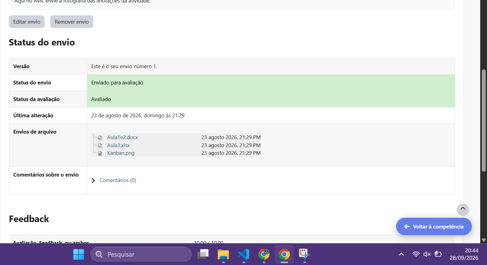
O que aprendi: A integrar os ODS à Engenharia de Produto: Você aprendeu a correlacionar metas globais da ONU com o desenvolvimento de sistemas, desenhando soluções com baixo impacto ecológico e foco em responsabilidade social.A conduzir sessões de Brainwriting em equipe: Você aprendeu a aplicar técnicas ágeis de geração e categorização de ideias usando post-its para destravar a criatividade coletiva de forma organizada.A estruturar projetos de melhoria contínua via DMAIC: Você compreendeu como o framework do Six Sigma organiza logicamente as fases de um projeto — desde a definição do problema até a rotina de controle —, substituindo o amadorismo por engenharia de processos focada em dados.
Semana 19
Tema:Práticas Inovadoras em Gestão de Projetos
Resumo:Aprendemos sobre metodologias e ferramentas inovadoras para melhorar o projeto multidisciplinar. Trabalhamos na identificação de problemas, busca de soluções criativas para o MVP e avaliação das melhorias. Também aprendemos sobre metodologias como Lean Startup, Agile, Design Thinking e Scrum.
Exemplo:
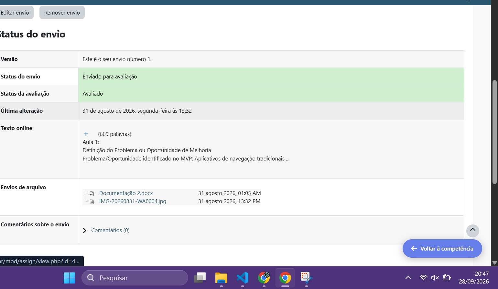
O que aprendi:Eu entendi que, para melhorar um projeto, é importante identificar os problemas, pensar em soluções inovadoras e testar as melhorias. Também entendi que devemos acompanhar os resultados e fazer ajustes quando necessário para que o MVP alcance seus objetivos.
Semana 20
Tema:Refinamento e Implementação de Melhorias
Resumo:Foi feita a coleta de feedbacks sobre o MVP por meio de formulários. Depois, analisamos as respostas, identificamos pontos fortes e pontos que precisavam de melhorias e fizemos os ajustes necessários. Também utilizamos a matriz SWOT para avaliar o projeto.
Exemplo:
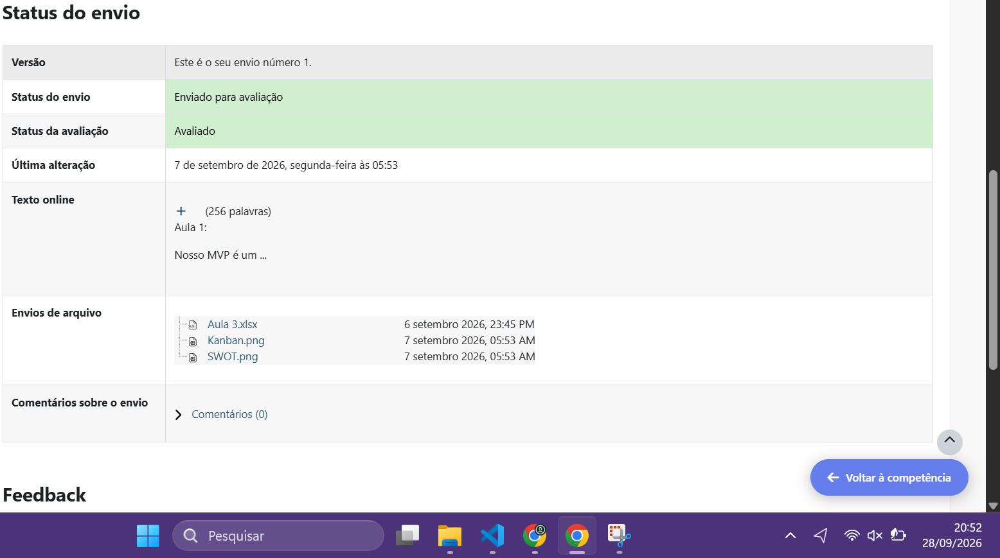
O que aprendi:Eu entendi que o feedback das pessoas ajuda a descobrir o que está funcionando e o que precisa ser melhorado. Também aprendi que a matriz SWOT ajuda a analisar as forças, fraquezas, oportunidades e ameaças de um projeto.
Semana 21
Tema:Execução e Avaliação Final de MVP
Resumo:Nesta etapa, revisamos e testamos todas as funcionalidades do MVP, verificando se os requisitos foram atendidos. Também acompanhamos seu desempenho por meio de indicadores e fizemos a avaliação e documentação final do projeto.
Exemplo:
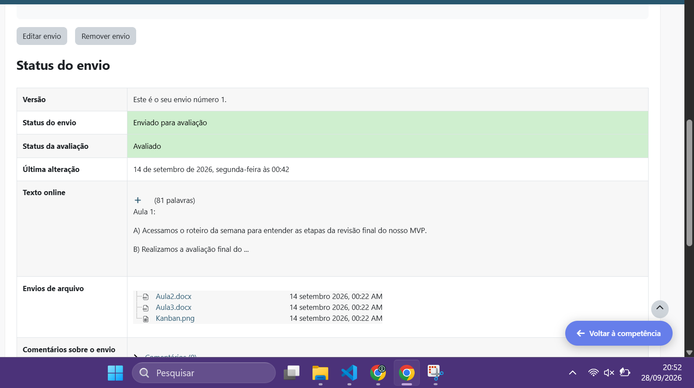
O que aprendi:Eu entendi que, antes de finalizar um projeto, é necessário testar tudo, corrigir os problemas e verificar se os objetivos foram alcançados. Também entendi que documentar o projeto é importante para registrar os resultados, as dificuldades e o que pode ser melhorado no futuro.